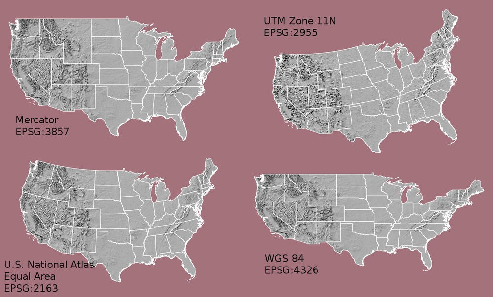
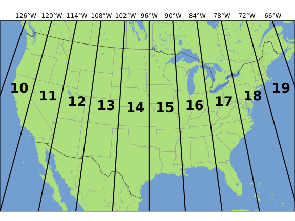
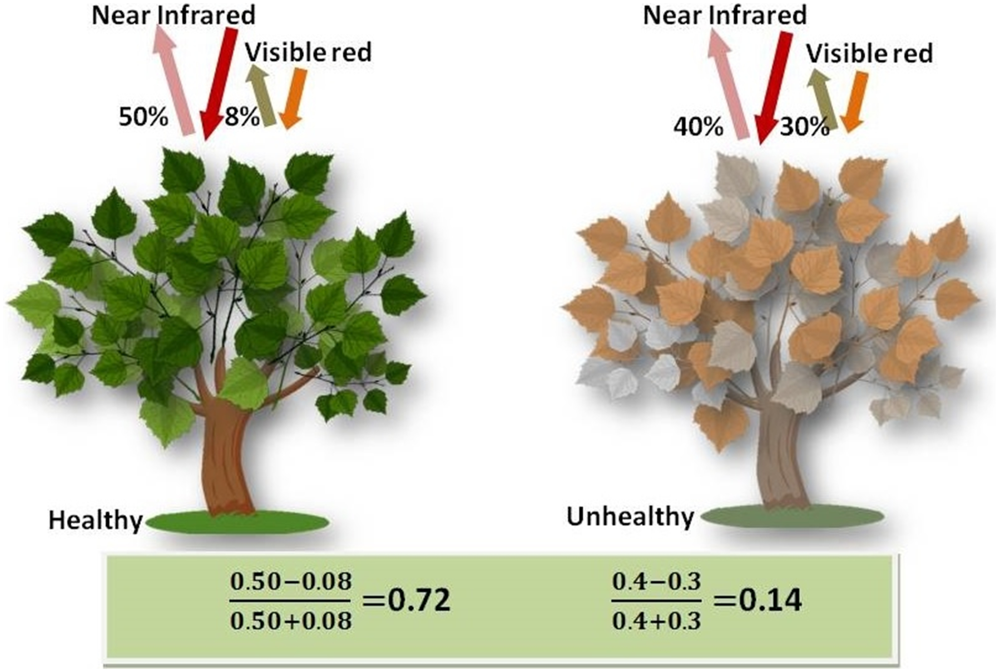

api_url = "https://earth-search.aws.element84.com/v0"This blog has been produced after working through the Introduction to Geospatial Raster and Vector data with Python lesson provided by Data Carpentry.
Data Structures: Raster and Vector
The two primary types of geospatial data are raster and vector data. Raster data is stored as a grid of values which are rendered on a map as pixels. Each pixel value represents an area on the Earth’s surface. Vector data structures represent specific features on the Earth’s surface, and assign attributes to those features. Vector data structures will be discussed in more detail in the next section.
This section will focus on how to work with both raster and vector data sets, therefore it is essential that we understand the basic structures of these types of data and the types of data that they can be used to represent.
1. Raster data
Raster data is any pixelated (or gridded) data where each pixel is associated with a specific geographic location. The value of a pixel can be continuous (e.g. elevation) or categorical (e.g. land use). If this sounds familiar, it is because this data structure is very common: it’s how we represent any digital image. A geospatial raster is only different from a digital photo in that it is accompanied by spatial information that connects the data to a particular location. This includes the raster’s extent and cell size, the number of rows and columns, and its coordinate reference system (or CRS).

Some examples of continuous rasters include:
- Precipitation maps
- Maps of tree height derived from LiDAR data
- Elevation values for a region
A map of elevation for Harvard Forest derived from the NEON AOP LiDAR sensor is below. Elevation is represented as a continuous numeric variable in this map. The legend shows the continuous range of values in the data from around 300 to 420 meters:

Some rasters contain categorical data where each pixel represents a discrete class such as a landcover type (e.g., “forest” or “grassland”) rather than a continuous value such as elevation or temperature. Some examples of classified maps include:
- Landcover / land-use maps
- Tree height maps classified as short, medium, and tall trees
- Elevation maps classified as low, medium, and high elevation
The map above shows the contiguous United States with landcover as categorical data. Each color is a different landcover category. (Source: Homer, C.G., et al., 2015, Completion of the 2011 National Land Cover Database for the conterminous United States-Representing a decade of land cover change information. Photogrammetric Engineering and Remote Sensing, v. 81, no. 5, p. 345-354)
Can you think of potential advantages and disadvantages of storing data in raster format?
Raster data has some important advantages:
- representation of continuous surfaces
- potentially very high levels of detail
- data is ‘unweighted’ across its extent - the geometry doesn’t implicitly highlight features
- cell-by-cell calculations can be very fast and efficient
The downsides of raster data are:
- very large file sizes as cell size gets smaller
- currently popular formats don’t embed metadata well (more on this later!)
- can be difficult to represent complex information
Extent
The spatial extent is the geographic area that the raster data covers. The spatial extent of an object represents the geographic edge or location that is the furthest north, south, east and west. In other words, extent represents the overall geographic coverage of the spatial object.

In the image above, the dashed boxes around each set of objects seems to imply that the three objects have the same extent. Is this accurate? If not, which object(s) have a different extent?
The lines and polygon objects have the same extent. The extent for the points object is smaller in the vertical direction than the other two because there are no points on the line at y = 8.
Resolution
A resolution of a raster represents the area on the ground that each pixel of the raster covers. The image below illustrates the effect of changes in resolution:

Raster data format
Raster data can come in many different formats. In this blog, we will use the GeoTIFF format which has the extension .tif. A .tif file stores metadata or attributes about the file as embedded tif tags. For instance, your camera might store a tag that describes the make and model of the camera or the date the photo was taken when it saves a .tif. A GeoTIFF is a standard .tif image format with additional spatial (georeferencing) information embedded in the file as tags. These tags should include the following raster metadata:
- extent
- resolution
- Coordinate Reference System (CRS) - this concept will be introduced later
- values that represent missing data (NoDataValue) - this concept will be introduced later
More resources on the .tif format
Multi-band Raster data
A raster can contain one or more bands. One type of multi-band raster dataset that is familiar to many of us is a colour image. A basic colour image consists of three bands: red, green, and blue. Each band represents light reflected from the red, green or blue portions of the electromagnetic spectrum. The pixel brightness for each band, when composited creates the colours that we see in an image.
We can plot each band of a multi-band image individually. Or we can composite all three bands together to make a colour image. In a multi-band dataset, the rasters will always have the same extent, resolution, and CRS.
Other Types of Multi-band Raster Data
Multi-band raster data might also contain:
- Time series: the same variable, over the same area, over time
- Multispectral imagery: image rasters that have 4 or more bands
- hyperspectral imagery: image rasters with more than 10-15 bands
Important
Key Points:
- raster data is pixelated data where each pixel is associated with a specific location
- raster data always has an extent and a resolution
- the extent is the geographical area covered by a raster
- the resolution is the area covered by each pixel of a raster
2. Vector data
Vector data structures represent specific features on the Earth’s surface, and assign attributes to those features. Vectors are composed of discrete geometric locations (x, y values) known as vertices that define the shape of the spatial object. The organization of the vertices determines the type of vector that we are working with:
- point;
- line; or
- polygon
Vector datasets are in use in many industries besides geospatial fields. For instance, computer graphics are largely vector-based, although the data structures in use tend to join points using arcs and complex curves rather than straight lines. Computer-aided design (CAD) is also vector- based. The difference is that geospatial datasets are accompanied by information tying their features to real-world locations.

Points
Each point is defined by a single x, y coordinate. There can be many points in a vector point file. Examples of point data include: sampling locations, the location of individual trees, or the location of survey plots.
Lines
Lines are composed of many (at least 2) points that are connected. For instance, a road or a stream may be represented by a line. This line is composed of a series of segments, each “bend” in the road or stream represents a vertex that has a defined x, y location.
Polygons
A polygon consists of 3 or more vertices that are connected and closed. The outlines of survey plot boundaries, lakes, oceans, and states or countries are often represented by polygons.
Data tip
Sometimes, boundary layers such as states and countries, are stored as lines rather than polygons. However, these boundaries, when represented as a line, will not create a closed object with a defined area that can be filled.
The plot below includes examples of two of the three types of vector objects. Use the definitions above to identify which features are represented by which vector type.
State boundaries are polygons. The Fisher Tower location is a point. There are no line features shown.

Advantages of vector data
- the geometry itself contains information about what the dataset creator thought was important
- the geometry structures hold information in themselves - why choose point over polygon, for instance?
- each geometry feature can carry multiple attributes instead of just one, e.g. a database of cities can have attributes for name, country, population, etc
- data storage can be very efficient compared to rasters
Disadvantages of vector data
- potential loss of detail compared to raster
- potential bias in datasets - what didn’t get recorded?
- calculations involving multiple vector layers need to do math on the geometry as well as the attributes, so can be slow compared to raster math
Vector data format
Like raster data, vector data can also come in many different formats. For this blog, we will use the Shapefile format. A Shapefile format consists of multiple files in the same directory, of which .shp, .shx, and .dbf files are mandatory. Other non-mandatory but very important files are .prj and shp.xml files.
- the .shp file stores the feature geometry itself
- .shx is a positional index of the feature geometry to allow quickly searching forwards and backwards the geographic coordinates of each vertex in the vector
- .dbf contains the tabular attributes for each shape.
- .prj file indicates the Coordinate reference system (CRS)
- .shp.xml contains the Shapefile metadata.
Together, the Shapefile includes the following information:
- extent - the spatial extent of the shapefile (i.e. geographic area that the shapefile covers). The spatial extent for a shapefile represents the combined extent for all spatial objects in the shapefile.
- object type - whether the shapefile includes points, lines, or polygons.
- Coordinate reference system (CRS)
- other attributes - for example, a line shapefile that contains the locations of streams, might contain the name of each stream.
Because the structure of points, lines, and polygons are different, each individual shapefile can only contain one vector type (all points, all lines or all polygons). You will not find a mixture of point, line and polygon objects in a single shapefile.
More resources on Shapefiles
More about shapefiles can be found on Wikipedia. Shapefiles are often publicly available from government services, such as this page from the US Census Bureau or this one from Australia’s Data.gov.au website.
Important
Key Points:
- vector data structures represent specific features on the Earth’s surface along with attributes of those features
- vector objects are either points, lines, or polygons
3. Coordinate Reference Systems
A data structure cannot be considered geospatial unless it is accompanied by coordinate reference system (CRS) information, in a format that geospatial applications can use to display and manipulate the data correctly. CRS information connects data to the Earth’s surface using a mathematical model. The CRS associated with a dataset tells your mapping software (for example Python) where the raster is located in geographic space. It also tells the mapping software what method should be used to flatten or project the raster in geographic space.
CRS and SRS (spatial reference system) are synonyms and are commonly interchanged. We will use only the term CRS throughout this blog.

The above image shows maps of the United States in different projections. Notice the differences in shape associated with each projection. These differences are a direct result of the calculations used to flatten the data onto a 2-dimensional map. (Source: opennews.org)
There are lots of great resources that describe coordinate reference systems and projections in greater detail.
Data from the same location but saved in different projections will not line up in any Geographic Information System(GIS) or other program.
It’s important when working with spatial data to identify the coordinate reference system applied to the data and retain it throughout data processing and analysis.
Components of a CRS
CRS information has three components:
Datum: A model of the shape of the earth. It has angular units (i.e. degrees) and defines the starting point (i.e. where is [0,0]?) so the angles reference a meaningful spot on the earth. Common global datums are WGS84 and NAD83. Datums can also be local - fit to a particular area of the globe, but ill-fitting outside the area of intended use. In this blog, we will use the WGS84 datum.
Projection: A mathematical transformation of the angular measurements on a round earth to a flat surface (i.e. paper or a computer screen). The units associated with a given projection are usually linear (feet, meters, etc.). In this workshop, we will see data in two different projections.
Additional Parameters: Additional parameters are often necessary to create the full coordinate reference system. One common additional parameter is a definition of the center of the map. The number of required additional parameters depends on what is needed by each specific projection.
Orange peel analogy
A common analogy employed to teach projections is the orange peel analogy. If you imagine that the Earth is an orange, how you peel it and then flatten the peel is similar to how projections get made.

Which projection should we use?
To decide if a projection is right for our data, answer these questions:
- What is the area of minimal distortion?
- What aspect of the data does it preserve?
Peter Dana from the University of Colorado at Boulder and the Department of Geo-Information Processing has a good discussion of these aspects of projections. Online tools like Projection Wizard can also help discover projections that might be a good fit for our data.
Describing Coordinate Reference Systems
There are several common systems in use for storing and transmitting CRS information, as well as translating among different CRSs. These systems generally comply with ISO 19111. Common systems for describing CRSs include EPSG, OGC WKT, and PROJ strings.
EPSG
The EPSG system is a database of CRS information maintained by the International Association of Oil and Gas Producers. The dataset contains both CRS definitions and information on how to safely convert data from one CRS to another. Using EPSG is easy as every CRS has an integer identifier, e.g. WGS84 is EPSG:4326. The downside is that you can only use the CRSs defined by EPSG and cannot customise them (some datasets do not have EPSG codes). epsg.io is an excellent website for finding suitable projections by location or for finding information about a particular EPSG code.
Well-Known Text
The Open Geospatial Consortium WKT standard is used by a number of important geospatial apps and software libraries. WKT is a nested list of geodetic parameters. The structure of the information is defined on their website. WKT is valuable in that the CRS information is more transparent than in EPSG, but can be more difficult to read and compare than PROJ since it is meant to necessarily represent more complex CRS information. Additionally, the WKT standard is implemented inconsistently across various software platforms, and the spec itself has some known issues.
PROJ
PROJ is an open-source library for storing, representing and transforming CRS information.
PROJ strings continue to be used, but the format is deprecated by the PROJ C maintainers due to inaccuracies when converting to the WKT format.
CRS information can still be represented with EPSG, WKT, or PROJ strings without consequence, but it is best to only use PROJ strings as a format for viewing CRS information, not for reprojecting data.
The data and python libraries we will be working with in this blog use different underlying representations of CRSs under the hood for reprojecting. PROJ represents CRS information as a text string of key-value pairs, which makes it easy to read and interpret.
A PROJ4 string includes the following information:
- proj: the projection of the data
- zone: the zone of the data (this is specific to the UTM projection)
- datum: the datum used
- units: the units for the coordinates of the data
- ellps: the ellipsoid (how the earth’s roundness is calculated) for the data
Note that the zone is unique to the UTM projection. Not all CRSs will have a zone.
 Image source: Chrismurf at English Wikipedia, via Wikimedia Commons (CC-BY).
Here is a PROJ4 string for one of the datasets we will use in this blog:
+proj=utm +zone=18 +datum=WGS84 +units=m +no_defs +ellps=WGS84 +towgs84=0,0,0
What projection, zone, datum, and ellipsoid are used for this data? What are the units of the data? Using the map above, what part of the United States was this data collected from?
- Projection is UTM, zone 18, datum is WGS84, ellipsoid is WGS84.
- The data is in meters.
- The data comes from the eastern US seaboard.
Format interoperability
Many existing file formats were invented by GIS software developers, often in a closed-source environment. This led to the large number of formats on offer today, and considerable problems transferring data between software environments. The Geospatial Data Abstraction Library (GDAL) is an open-source answer to this issue.
GDAL is a set of software tools that translate between almost any geospatial format in common use today (and some not so common ones). GDAL also contains tools for editing and manipulating both raster and vector files, including reprojecting data to different CRSs. GDAL can be used as a standalone command-line tool, or built in to other GIS software. Several open-source GIS programs use GDAL for all file import/export operations.
Metadata
Spatial data is useless without metadata. Essential metadata includes the CRS information, but proper spatial metadata encompasses more than that. History and provenance of a dataset (how it was made), who is in charge of maintaining it, and appropriate (and inappropriate!) use cases should also be documented in metadata. This information should accompany a spatial dataset wherever it goes. In practice this can be difficult, as many spatial data formats don’t have a built-in place to hold this kind of information. Metadata often has to be stored in a companion file, and generated and maintained manually.
More Resources on CRS
- spatialreference.org - A comprehensive online library of CRS information.
- QGIS Documentation - CRS Overview.
- Choosing the Right Map Projection.
- Video highlighting how map projections can make continents seems proportionally larger or smaller than they actually are.
Important
Key Points:
- All geospatial datasets (raster and vector) are associated with a specific coordinate reference system
- A coordinate reference system includes datum, projection, and additional parameters specific to the dataset
4. The Geospatial Landscape
Most traditional GIS work is carried out in standalone applications that aim to provide end-to-end geospatial solutions. These applications are available under a wide range of licenses and price points. Some of the most common are listed below.
Open-source software
The Open Source Geospatial Foundation (OSGEO) supports several actively managed GIS platforms:
QGIS is a professional GIS application that is built on top of and proud to be itself Free and Open Source Software (FOSS). QGIS is written in Python, has a python console interface, and has several interfaces written in R including RQGIS.
GRASS GIS, commonly referred to as GRASS (Geographic Resources Analysis Support System), is a FOSS-GIS software suite used for geospatial data management and analysis, image processing, graphics and maps production, spatial modeling, and visualization. GRASS GIS is currently used in academic and commercial settings around the world, as well as by many governmental agencies and environmental consulting companies. It is a founding member of the Open Source Geospatial Foundation (OSGeo). GRASS GIS can be installed along with and made accessible within QGIS 3.
GDAL is a multiplatform set of tools for translating between geospatial data formats. It can also handle reprojection and a variety of geoprocessing tasks. GDAL is built in to many applications both FOSS and commercial, including GRASS and QGIS.
SAGA-GIS, or System for Automated Geoscientific Analyses, is a FOSS-GIS application developed by a small team of researchers from the Dept. of Physical Geography, Göttingen, and the Dept. of Physical Geography, Hamburg. SAGA has been designed for an easy and effective implementation of spatial algorithms, offers a comprehensive, growing set of geoscientific methods, provides an easily approachable user interface with many visualisation options, and runs under Windows and Linux operating systems. Like GRASS GIS, it can also be installed and made accessible in QGIS3.
PostGIS is a geospatial extension to the PostGreSQL relational database.
Online + Cloud computing
PANGEO is a community organization dedicated to open and reproducible data science with python. They focus on the Pangeo software ecosystem for working with big data in the geosciences. This community organization also supports python libraries like xarray, iris, dask, jupyter, and many other packages.
Google has created Google Earth Engine which combines a multi-petabyte catalog of satellite imagery and geospatial datasets with planetary-scale analysis capabilities and makes it available for scientists, researchers, and developers to detect changes, map trends, and quantify differences on the Earth’s surface. Earth Engine API runs in both Python and JavaScript.
ArcGIS Online provides access to thousands of maps and base layers.
Kepler.gl is Uber’s toolkit for handling large datasets (i.e. Uber’s data archive).
Sepal.io by FAO Open Foris utilizing EOS satellite imagery and cloud resources for global forest monitoring.
GUI vs CLI
The earliest computer systems operated without a graphical user interface (GUI), relying only on the command-line interface (CLI). Since mapping and spatial analysis are strongly visual tasks, GIS applications benefited greatly from the emergence of GUIs and quickly came to rely heavily on them. Most modern GIS applications have very complex GUIs, with all common tools and procedures accessed via buttons and menus.
Benefits of using a GUI include:
- Tools are all laid out in front of you
- Complex commands are easy to build
- Don’t need to learn a coding language
- Cartography and visualisation is more intuitive and flexible
Downsides of using a GUI include:
- Low reproducibility - you can’t record your actions and replay
- Most are not designed for batch-processing files
- Limited ability to customise functions or write your own
- Intimidating interface for new users - so many buttons!
In scientific computing, the lack of reproducibility in point-and-click software has come to be viewed as a critical weakness. As such, scripted CLI-style workflows are again becoming popular, which leads us to another approach to doing GIS — via a programming language. This is the approach we will be using throughout this blog.
GIS in programming languages
A number of powerful geospatial processing libraries exist for general-purpose programming languages like Java and C++. However, the learning curve for these languages is steep and the effort required is excessive for users who only need a subset of their functionality.
Higher-level scripting languages like Python and R are easier to learn and use. Both now have their own packages that wrap up those geospatial processing libraries and make them easy to access and use safely. A key example is the Java Topology Suite (JTS), which is implemented in C++ as GEOS. GEOS is accessible in Python via the shapely package (and geopandas, which makes use of shapely) and in R via sf. R and Python also have interface packages for GDAL, and for specific GIS apps.
This last point is a huge advantage for GIS-by-programming; these interface packages give you the ability to access functions unique to particular programs, but have your entire workflow recorded in a central document - a document that can be re-run at will. Below are lists of some of the key spatial packages for Python, which we will be using in the remainder of this workshop.
- geopandas and geocube for working with vector data
- rasterio and rioxarray for working with raster data
These packages along with the matplotlib package are all we need for spatial data visualisation. Python also has many fundamental scientific packages that are relevant in the geospatial domain. Below is a list of particularly fundamental packages:
- NumPy
- scipy
- scikit-image
These are all excellent options for working with rasters, as arrays. An overview of these and other Python spatial packages can be accessed here.
As a programming language, Python can be a CLI tool. However, using Python together with an Integrated Development Environment (IDE) application allows some GUI features to become part of your workflow. IDEs allow the best of both worlds. They provide a place to visually examine data and other software objects, interact with your file system, and draw plots and maps, but your activities are still command-driven: recordable and reproducible. There are several IDEs available for Python. JupyterLab is well-developed and the most widely used option for data science in Python. VSCode and Spyder are other popular options for data science.
Traditional GIS apps are also moving back towards providing a scripting environment for users, further blurring the CLI/GUI divide. ESRI have adopted Python into their software, and QGIS is both Python and R-friendly.
GIS File Types
There are a variety of file types that are used in GIS analysis. Depending on the program you choose to use some file types can be used while others are not readable. Below is a brief table describing some of the most common vector and raster file types.

Important
Key Points:
- Many software packages exist for working with geospatial data
- Command-line programs allow you to automate and reproduce your work
- JupyterLab provides a user-friendly interface for working with Python
5. Access satellite imagery using Python
A number of satellites take snapshots of the Earth’s surface from space. The images recorded by these remote sensors represent a very precious data source for any activity that involves monitoring changes on Earth. Satellite imagery is typically provided in the form of geospatial raster data, with the measurements in each grid cell (“pixel”) being associated to accurate geographic coordinate information.
In this section we will explore how to access open satellite data using Python. In particular, we will consider the Sentinel-2 data collection that is hosted on AWS. This dataset consists of multi-band optical images acquired by the two satellites of the Sentinel-2 mission and it is continuously updated with new images.
Search for satellite imagery - Sentinel
Current sensor resolutions and satellite revisit periods are such that terabytes of data products are added daily to the corresponding collections. Such datasets cannot be made accessible to users via full-catalog download. Space agencies and other data providers often offer access to their data catalogs through interactive Graphical User Interfaces (GUIs), see for instance the Copernicus Open Access Hub portal for the Sentinel missions. Accessing data via a GUI is a nice way to explore a catalog and get familiar with its content, but it represents a heavy and error-prone task that should be avoided if carried out systematically to retrieve data.
A service that offers programmatic access to the data enables users to reach the desired data in a more reliable, scalable and reproducible manner. An important element in the software interface exposed to the users, which is generally called the Application Programming Interface (API), is the use of standards. Standards, in fact, can significantly facilitate the reusability of tools and scripts across datasets and applications.
The SpatioTemporal Asset Catalog (STAC) specification is an emerging standard for describing geospatial data. By organizing metadata in a form that adheres to the STAC specifications, data providers make it possible for users to access data from different missions, instruments and collections using the same set of tools.
Search a STAC catalog
The STAC browser is a good starting point to discover available datasets, as it provides an up-to-date list of existing STAC catalogs. From the list, let’s click on the “Earth Search” catalog, i.e. the access point to search the archive of Sentinel-2 images hosted on AWS.
Let’s take a moment to explore the Earth Search STAC catalog, which is the catalog indexing the Sentinel-2 collection that is hosted on AWS. We can interactively browse this catalog using the STAC browser at this link :
- Open the link in your web browser. Which (sub-) catalogs are available?
Four subcatalogs are available, including both Sentinel 2 and Landsat 8 images

- Open the Sentinel-2 L2A COGs collection, and select one item from the list. Each item corresponds to a satellite “scene”, i.e. a portion of the footage recorded by the satellite at a given time. Have a look at the metadata fields and the list of assets. What kind of data do the assets represent?
When you select the Sentinel-2 L2A COGs collection, and randomly choose one of the items from the list, you should find yourself on a page similar to the screenshot above. On the left side you will find a list of the available assets: overview images (thumbnail and true color images), metadata files and the “real” satellite images, one for each band captured by the Multispectral Instrument on board Sentinel-2.
When opening a catalog with the STAC browser, you can access the API URL by clicking on the “Source” button on the top right of the page. By using this URL, we have access to the catalog content and, if supported by the catalog, to the functionality of searching its items. For the Earth Search STAC catalog the API URL is:
We can query a STAC API endpoint from Python using the pystac_client library:
from pystac_client import Client
client = Client.open(api_url)In the following, we ask for scenes belonging to the sentinel-s2-l2a-cogs collection. This dataset includes Sentinel-2 data products pre-processed at level 2A (bottom-of-atmosphere reflectance) and saved in Cloud Optimized GeoTIFF (COG) format:
# Sentinel-2, Level 2A, COGs
collection = "sentinel-s2-l2a-cogs" https://earth-search.aws.element84.com/v0/collections/sentinel-s2-l2a-cogsCloud Optimized GeoTIFFs
Cloud Optimized GeoTIFFs (COGs) are regular GeoTIFF files with some additional features that make them ideal to be employed in the context of cloud computing and other web-based services. This format builds on the widely-employed GeoTIFF format, introduced in section 1: Raster Data.
In essence, COGs are regular GeoTIFF files with a special internal structure. One of the features of COGs is that data is organized in “blocks” that can be accessed remotely via independent HTTP requests. Data users can thus access the only blocks of a GeoTIFF that are relevant for their analysis, without having to download the full file. In addition, COGs typically include multiple lower-resolution versions of the original image, called “overviews”, which can also be accessed independently. By providing this “pyramidal” structure, users that are not interested in the details provided by a high-resolution raster can directly access the lower-resolution versions of the same image, significantly saving on the downloading time. More information on the COG format can be found here.
We also ask for scenes intersecting a geometry defined using the shapely library (in this case, a point):
# AMS coordinates
from shapely.geometry import Point
point = Point(4.89, 52.37) Note: at this stage, we are only dealing with metadata, so no image is going to be downloaded yet. But even metadata can be quite bulky if a large number of scenes match our search! For this reason, we limit the search result to 10 items:
# Search for scenes which include the point(4.89, 52.37)
search = client.search(
collections=[collection],
intersects=point,
max_items=10,
)We submit the query and find out how many scenes match our search criteria (please note that this output can be different as more data is added to the catalog):
print(search.matched())736Finally, we retrieve the metadata of the search results:
items = search.get_all_items()
print(len(items))10This is consistent with the maximum number of items that we set in the search criteria. We can iterate over the returned items and print these to show their IDs:
# Iterate over our 10 items to show unique IDs
for item in items:
print(item)<Item id=S2B_31UFU_20221211_0_L2A>
<Item id=S2B_31UFU_20221208_0_L2A>
<Item id=S2A_31UFU_20221206_0_L2A>
<Item id=S2A_31UFU_20221203_0_L2A>
<Item id=S2B_31UFU_20221201_0_L2A>
<Item id=S2B_31UFU_20221128_0_L2A>
<Item id=S2A_31UFU_20221126_0_L2A>
<Item id=S2A_31UFU_20221123_0_L2A>
<Item id=S2B_31UFU_20221121_0_L2A>
<Item id=S2B_31UFU_20221118_0_L2A>Each of the items contains information about the scene geometry, its acquisition time, and other metadata that can be accessed as a dictionary from the properties attribute. Let’s inspect the metadata associated with the first item of the search results:
# extract some metadata from our first search item
item = items[0]
print(item.datetime)
print(item.geometry)
print(item.properties)2022-12-11 10:56:20+00:00
{'type': 'Polygon', 'coordinates': [[[6.071664488869862, 52.22257539160586], [4.464995307918359, 52.25346561204129], [4.498475093400055, 53.24019917467795], [6.1417542968794585, 53.20819279121764], [6.071664488869862, 52.22257539160586]]]}
{'datetime': '2022-12-11T10:56:20Z', 'platform': 'sentinel-2b', 'constellation': 'sentinel-2', 'instruments': ['msi'], 'gsd': 10, 'view:off_nadir': 0, 'proj:epsg': 32631, 'sentinel:utm_zone': 31, 'sentinel:latitude_band': 'U', 'sentinel:grid_square': 'FU', 'sentinel:sequence': '0', 'sentinel:product_id': 'S2B_MSIL2A_20221211T105339_N0509_R051_T31UFU_20221211T122517', 'sentinel:data_coverage': 100, 'eo:cloud_cover': 53.32, 'sentinel:valid_cloud_cover': True, 'sentinel:processing_baseline': '05.09', 'sentinel:boa_offset_applied': True, 'created': '2022-12-11T19:02:22.484Z', 'updated': '2022-12-11T19:02:22.484Z'}The above metadata e.g. datetime, eo:cloud_cover are the arguments which can be fed into our search to acess specific information.
Let’s try another scene search from the sentinel-s2-l2a-cogs collection using different criteria:
-intersect a provided bounding box (use ±0.01 deg in lat/lon from the previously defined point);
-have been recorded between 20 March 2020 and 30 March 2020;
-have a cloud coverage smaller than 10% (hint: use the query input argument of client.search).bound_box = point.buffer(0.01).bounds# Search for scenes which intersect bounding box +- 0.01 deg in lat/lon from (4.89, 52.37) as prev defined
# between 20/3/20 and 30/3/20 where cloud cover < 10%
search = client.search(
collections=[collection],
bbox=bound_box,
datetime="2020-03-20/2020-03-30",
query=["eo:cloud_cover<10"]
)
print(search.matched())4# Grab search items and save as a JSON file
items = search.get_all_items()
items.save_object("search.json")An extract of the JSON file is included below. As we can see the file contains a lot of information for each of our 4 search items, which are indexed 0 to 3, such as properties, geometry, links etc:

Access the images(assets)
So far we have only discussed metadata - but how can one get to the actual images of a satellite scene (the “assets” in the STAC nomenclature)? These can be reached via links that are made available through the item’s attribute assets. The JSON file extract is included below, followed by how to access this info using Python.

# first item's asset dictionary
assets = items[0].assets
print(assets.keys())dict_keys(['thumbnail', 'overview', 'info', 'metadata', 'visual', 'B01', 'B02', 'B03', 'B04', 'B05', 'B06', 'B07', 'B08', 'B8A', 'B09', 'B11', 'B12', 'AOT', 'WVP', 'SCL'])As we can see these dictionary keys match the headings included in the JSON image above.
We can print a minimal description of the available assets:
for key, asset in assets.items():
print(f"{key}: {asset.title}")thumbnail: Thumbnail
overview: True color image
info: Original JSON metadata
metadata: Original XML metadata
visual: True color image
B01: Band 1 (coastal)
B02: Band 2 (blue)
B03: Band 3 (green)
B04: Band 4 (red)
B05: Band 5
B06: Band 6
B07: Band 7
B08: Band 8 (nir)
B8A: Band 8A
B09: Band 9
B11: Band 11 (swir16)
B12: Band 12 (swir22)
AOT: Aerosol Optical Thickness (AOT)
WVP: Water Vapour (WVP)
SCL: Scene Classification Map (SCL)Among the others, assets include multiple raster data files B01 through B12 (one per optical band, as acquired by the multi-spectral instrument), a thumbnail, a true-color image (“visual”), instrument metadata and scene-classification information (“SCL”).
# Let’s get the URL links to the actual image:
print(assets["thumbnail"].href)https://roda.sentinel-hub.com/sentinel-s2-l1c/tiles/31/U/FU/2020/3/28/0/preview.jpg
Remote raster data can be directly opened via the rioxarray library. We will learn more about this library in the next sections.
# Open raster B01 Band 1 (coastal)
import rioxarray
b01_href = assets["B01"].href
b01 = rioxarray.open_rasterio(b01_href)
print(b01)<xarray.DataArray (band: 1, y: 1830, x: 1830)>
[3348900 values with dtype=uint16]
Coordinates:
* band (band) int64 1
* x (x) float64 6e+05 6.001e+05 6.002e+05 ... 7.097e+05 7.098e+05
* y (y) float64 5.9e+06 5.9e+06 5.9e+06 ... 5.79e+06 5.79e+06
spatial_ref int64 0
Attributes:
AREA_OR_POINT: Area
OVR_RESAMPLING_ALG: AVERAGE
_FillValue: 0
scale_factor: 1.0
add_offset: 0.0We can then save the data to disk:
# save image to disk
b01.rio.to_raster("B01.tif")Search for satellite imagery - Landsat 8
Let’s now put into practice all the skills we have learned in this section to retrieve images from a different mission: Landsat 8. In particular, we browse images from the Harmonized Landsat Sentinel-2 (HLS) project, which provides images from NASA’s Landsat 8 and ESA’s Sentinel-2 that have been made consistent with each other. The HLS catalog is indexed in the NASA Common Metadata Repository (CMR) and it can be accessed from the STAC API endpoint at the following URL: https://cmr.earthdata.nasa.gov/stac/LPCLOUD.
- using pystac_client, search for all assets of the Landsat 8 collection (HLSL30.v2.0) from February to March 2021
- intersecting the point with longitude/latitute coordinates (-73.97, 40.78) deg.
- sort by cloud cover
Visualize an item’s thumbnail (asset key “browse”).
# Connect to the STAC endpoint
api_url = "https://cmr.earthdata.nasa.gov/stac/LPCLOUD"
client = Client.open(api_url)# Search for scenes which include point (-73.97, 40.78) between Feb and March 2021
# Note we can enter collections and co_ors directly into search argument
search = client.search(
collections=["HLSL30.v2.0"],
intersects=Point(-73.97, 40.78),
datetime="2021-02-01/2021-03-31"
)
# retrieve search results
items = search.get_all_items()
# save as JSON file
items.save_object("landsat.search.json")
print(len(items))5# sort by cloud cover and select first item
items_sorted = sorted(items, key=lambda x: x.properties["eo:cloud_cover"])
item = items_sorted[0]
print(item)<Item id=HLS.L30.T18TWL.2021039T153324.v2.0># Let’s get the URL links to the actual image:
print(item.assets["browse"].href)https://data.lpdaac.earthdatacloud.nasa.gov/lp-prod-public/HLSL30.020/HLS.L30.T18TWL.2021039T153324.v2.0/HLS.L30.T18TWL.2021039T153324.v2.0.jpg
Public catalogs, protected data
Publicly accessible catalogs and STAC endpoints do not necessarily imply publicly accessible data. Data providers, in fact, may limit data access to specific infrastructures and/or require authentication. For instance, the NASA CMR STAC endpoint considered in the last exercise offers publicly accessible metadata for the HLS collection, but most of the linked assets are available only for registered users (the thumbnail is publicly accessible).
The authentication procedure for dataset with restricted access might differ depending on the data provider. For the NASA CMR, follow these steps in order to access data using Python:
- create a NASA Earthdata login account here;
- set up a netrc file with your credentials, e.g. by using this script;
- define the following environment variables:
import os
os.environ["GDAL_HTTP_COOKIEFILE"] = "./cookies.txt"
os.environ["GDAL_HTTP_COOKIEJAR"] = "./cookies.txt"
Key Points
accessing satellite images via the providers’ API enables a more reliable and scalable data retrieval
STAC catalogs can be browsed and searched using the same tools and scripts
rioxarray allows you to open and download remote raster files
6. Read and visualize raster data
Raster datasets were introduced in section 1. Here, we introduce the fundamental principles, packages and metadata/raster attributes for working with raster data in Python. We will also explore how Python handles missing and bad data values.
rioxarray is the Python package we will use throughout this blog to work with raster data. It is based on the popular rasterio package for working with rasters and xarray for working with multi-dimensional arrays. rioxarray extends xarray by providing top-level functions (e.g. the open_rasterio function to open raster datasets) and by adding a set of methods to the main objects of the xarray package (the Dataset and the DataArray). These additional methods are made available via the rio accessor and become available from xarray objects after importing rioxarray.
We will also use the pystac package to load rasters from the search results we created in the previous section.
We’ll continue from the results of the satellite image search that we have carried out in the previous section. We will load data starting from the search.json file, using one scene from the search results as an example to demonstrate data loading and visualization. You can download the raster data using this link. Save the geospatial-python-raster-dataset.tar.gz file in your current working directory, and extract the archive file by double-clicking on it or by running the following command in your terminal tar -zxvf geospatial-python-raster-dataset.tar.gz. Use the file geospatial-python-raster-dataset/search.json (instead of search.json) to get started with this lesson.
Load a Raster and View Attributes
In the previous section, we searched for Sentinel-2 images, and then saved the search results to a file named search.json. This contains the information on where and how to access the target images from a remote repository. We can use the function pystac.ItemCollection.from_file() to load the search results as an Item list.
import pystac
items = pystac.ItemCollection.from_file("search.json")In the search results, we have 2 Item type objects, corresponding to 4 Sentinel-2 scenes from March 26th and 28th in 2020. We will focus on the first scene S2A_31UFU_20200328_0_L2A, and load band B09 (central wavelength 945 nm). We can load this band using the function rioxarray.open_rasterio(), via the Hypertext Reference href (commonly referred to as a URL):
import rioxarray
# load band B09 (central wavelength 945 nanometres(nm) - 1 nm = 10^-9m
raster_ams_b9 = rioxarray.open_rasterio(items[0].assets["B09"].href)
# Call the variable name to get a quick look at the shape and attributes
raster_ams_b9<xarray.DataArray (band: 1, y: 1830, x: 1830)>
[3348900 values with dtype=uint16]
Coordinates:
* band (band) int64 1
* x (x) float64 6e+05 6.001e+05 6.002e+05 ... 7.097e+05 7.098e+05
* y (y) float64 5.9e+06 5.9e+06 5.9e+06 ... 5.79e+06 5.79e+06
spatial_ref int64 0
Attributes:
AREA_OR_POINT: Area
OVR_RESAMPLING_ALG: AVERAGE
_FillValue: 0
scale_factor: 1.0
add_offset: 0.0The first call to rioxarray.open_rasterio() opens the file from remote or local storage, and then returns a xarray.DataArray object. The object is stored in a variable, i.e. raster_ams_b9. Reading in the data with xarray instead of rioxarray also returns a xarray.DataArray, but the output will not contain the geospatial metadata (such as projection information). We can use numpy functions or built-in Python math operators on a xarray.DataArray just like a numpy array. Calling the variable name of the DataArray also prints out all of its metadata information.
The output tells us that we are looking at an xarray.DataArray, with:
- 1 band;
- 1830 rows(y); and
- 1830 columns(x)
We can also see the number of pixel values in the DataArray (1,830 x 1,830 = 3,348,900) and the type of those pixel values, which is unsigned integer (or uint16). The DataArray also stores different values for the coordinates of the DataArray. When using rioxarray, the term coordinates refers to spatial coordinates like x and y but also the band coordinate. Each of these sequences of values has its own data type, like float64 for the spatial coordinates and int64 for the band coordinate.
This DataArray object also has a couple of attributes that are accessed like .rio.crs, .rio.nodata, and .rio.bounds(), which contain the metadata for the file we opened.
Note
Note that many of the metadata are accessed as attributes using .attribute_name, but bounds() is a method (i.e. a function in an object) and needs parentheses.
# Co_ordinate Reference System
print(raster_ams_b9.rio.crs)
# Nodata value encoded as...
print(raster_ams_b9.rio.nodata)
# Bounding box corners
print(raster_ams_b9.rio.bounds())
# Width
print(raster_ams_b9.rio.width)
# Height
print(raster_ams_b9.rio.height)EPSG:32631
0
(600000.0, 5790240.0, 709800.0, 5900040.0)
1830
1830The Coordinate Reference System, or raster_ams_b9.rio.crs, is reported as the string EPSG:32631. The nodata value is encoded as 0 and the bounding box corners of our raster are represented by the output of .bounds() as a tuple (like a list but we can’t edit it). The height and width match what we saw when we printed the DataArray, but by using .rio.width and .rio.height we can access these values if we need them in calculations.
We will be exploring this data throughout this section. By the end of this section we will be able to understand and explain the metadata output.
Visualize a Raster
After viewing the attributes of our raster, we can examine the raw values of the array with .values:
raster_ams_b9.valuesarray([[[ 0, 0, 0, ..., 8888, 9075, 8139],
[ 0, 0, 0, ..., 10444, 10358, 8669],
[ 0, 0, 0, ..., 10346, 10659, 9168],
...,
[ 0, 0, 0, ..., 4295, 4289, 4320],
[ 0, 0, 0, ..., 4291, 4269, 4179],
[ 0, 0, 0, ..., 3944, 3503, 3862]]], dtype=uint16)This can give us a quick view of the values of our array, but only at the corners. Since our raster is loaded in python as a DataArray type, we can plot this in one line similar to a pandas DataFrame with DataArray.plot() :
raster_ams_b9.plot()<matplotlib.collections.QuadMesh at 0x7fa254cc0d30>
Nice plot! Notice that rioxarray helpfully allows us to plot this raster with spatial coordinates on the x and y axis (this is not the default in many cases with other functions or libraries).
This plot shows the satellite measurement of the spectral band B09 for an area that covers part of the Netherlands. According to the Sentinel-2 documentaion, this is a band with the central wavelength of 945nm, which is sensitive to water vapour. It has a spatial resolution of 60m. Note that the band=1 in the image title refers to the ordering of all the bands in the DataArray, not the Sentinel-2 band number B09 that we saw in the pystac search results.
With a quick view of the image, we notice that half of the image is blank, no data is captured. We also see that the cloudy pixels at the top have high reflectance values, while the contrast of everything else is quite low. This is expected because this band is sensitive to the water vapour.
To obtain a better colour contrast, we can add the option robust=True, which displays values between the 2nd and 98th percentile.
# restrict display to values within the 2nd and 98th quartile
raster_ams_b9.plot(robust=True)<matplotlib.collections.QuadMesh at 0x7fa255063370>
Now that the colour limit is set in a way fitting most of the values in the image, we have a much better view of the ground pixels.
The option robust=True defaults to displaying values between the 2nd and 98th percentile.
For a customized displaying range, you can also manually specifying the keywords vmin and vmax.
raster_ams_b9.plot(vmin=100, vmax=7000)<matplotlib.collections.QuadMesh at 0x7fa254f4e680>
View Raster Coordinate Reference System (CRS) in Python
Another feature that we’re interested in is the CRS, and it can be accessed with .rio.crs. We introduced the concept of a CRS in an earlier section. Now we will see how features of the CRS appear in our data file and what meanings they have. We can view the CRS string associated with our DataArray’s rio object using the crs attribute.
# view the co_ordinate reference system string
print(raster_ams_b9.rio.crs)EPSG:32631To print the EPSG code number as an int, we use the .to_epsg() method:
# print the ESPG code as an int
raster_ams_b9.rio.crs.to_epsg()32631EPSG codes are great for succinctly representing a particular coordinate reference system. But what if we want to see more details about the CRS, like the units? For that, we can use pyproj, a library for representing and working with coordinate reference systems.
from pyproj import CRS
epsg = raster_ams_b9.rio.crs.to_epsg()
crs = CRS(epsg)
crs<Derived Projected CRS: EPSG:32631>
Name: WGS 84 / UTM zone 31N
Axis Info [cartesian]:
- E[east]: Easting (metre)
- N[north]: Northing (metre)
Area of Use:
- name: Between 0°E and 6°E, northern hemisphere between equator and 84°N, onshore and offshore. Algeria. Andorra. Belgium. Benin. Burkina Faso. Denmark - North Sea. France. Germany - North Sea. Ghana. Luxembourg. Mali. Netherlands. Niger. Nigeria. Norway. Spain. Togo. United Kingdom (UK) - North Sea.
- bounds: (0.0, 0.0, 6.0, 84.0)
Coordinate Operation:
- name: UTM zone 31N
- method: Transverse Mercator
Datum: World Geodetic System 1984 ensemble
- Ellipsoid: WGS 84
- Prime Meridian: GreenwichUnderstanding pyproj CRS Summary
Let’s break down the pieces of the pyproj CRS summary. The string contains all of the individual CRS elements that Python or another GIS might need, separated into distinct sections, and datum.
- Name: of the projection is UTM zone 31N (UTM has 60 zones, each 6-degrees of longitude in width). The underlying datum is WGS84.
- Axis Info: the CRS shows a Cartesian system with two axes, easting and northing, in meter units.
- Area of Use: the projection is used for a particular range of longitudes 0°E to 6°E in the northern hemisphere (0.0°N to 84.0°N)
- Coordinate Operation: the operation to project the coordinates (if it is projected) onto a cartesian (x, y) plane. Transverse Mercator is accurate for areas with longitudinal widths of a few degrees, hence the distinct UTM zones.
- Datum: Details about the datum, or the reference point for coordinates. WGS 84 and NAD 1983 are common datums. NAD 1983 is set to be replaced in 2022.
Note
Note that the zone is unique to the UTM projection. Not all CRSs will have a zone.
The CRS class from the pyproj library allows us to create a CRS object with methods and attributes for accessing specific information about a CRS, or the detailed summary shown above. A particularly useful attribute is area_of_use, which shows the geographic bounds that the CRS is intended to be used.
crs.area_of_useAreaOfUse(west=0.0, south=0.0, east=6.0, north=84.0, name='Between 0°E and 6°E, northern hemisphere between equator and 84°N, onshore and offshore. Algeria. Andorra. Belgium. Benin. Burkina Faso. Denmark - North Sea. France. Germany - North Sea. Ghana. Luxembourg. Mali. Netherlands. Niger. Nigeria. Norway. Spain. Togo. United Kingdom (UK) - North Sea.')
What units are our data in? See if you can find a method to examine this information using help(crs) or dir(crs)
crs.axis_info tells us that the CRS for our raster has two axis and both are in meters. We could also get this information from the attribute raster_ams_b9.rio.crs.linear_units.
crs.axis_info[Axis(name=Easting, abbrev=E, direction=east, unit_auth_code=EPSG, unit_code=9001, unit_name=metre),
Axis(name=Northing, abbrev=N, direction=north, unit_auth_code=EPSG, unit_code=9001, unit_name=metre)]raster_ams_b9.rio.crs.linear_units'metre'Calculate Raster Statistics
It is useful to know the minimum or maximum values of a raster dataset. We can compute these and other descriptive statistics with min, max, mean, and std.
print(raster_ams_b9.min())
print(raster_ams_b9.max())
print(raster_ams_b9.mean())
print(raster_ams_b9.std())<xarray.DataArray ()>
array(0, dtype=uint16)
Coordinates:
spatial_ref int64 0
<xarray.DataArray ()>
array(15497, dtype=uint16)
Coordinates:
spatial_ref int64 0
<xarray.DataArray ()>
array(1652.44009944)
Coordinates:
spatial_ref int64 0
<xarray.DataArray ()>
array(2049.16447495)
Coordinates:
spatial_ref int64 0The information above includes a report of the min, max, mean, and standard deviation values, along with the data type. If we want to see specific quantiles, we can use xarray’s .quantile() method. For example for the 25% and 75% quantiles:
print(raster_ams_b9.quantile([0.25, 0.75]))<xarray.DataArray (quantile: 2)>
array([ 0., 2911.])
Coordinates:
* quantile (quantile) float64 0.25 0.75We could also get each of these values one by one using NumPy:
import numpy
print(numpy.percentile(raster_ams_b9, 25))
print(numpy.percentile(raster_ams_b9, 75))0.0
2911.0
You may notice that raster_ams_b9.quantile and numpy.percentile didn’t require an argument specifying the axis or dimension along which to compute the quantile. This is because axis=None is the default for most numpy functions, and therefore dim=None is the default for most xarray methods.
it’s always good to check out the docs on a function to see what the default arguments are, particularly when working with multi-dimensional image data. To do so, we can use help(raster_ams_b9.quantile) or ?raster_ams_b9.quantile if you are using jupyter notebook or jupyter lab.
Dealing with Missing Data
So far, we have visualized a band of a Sentinel-2 scene and calculated its statistics. However, we need to take missing data into account. Raster data often has a “no data value” associated with it and for raster datasets read in by rioxarray. This value is referred to as nodata. This is a value assigned to pixels where data is missing or no data were collected. There can be different cases that cause missing data, and it’s common for other values in a raster to represent different cases. The most common example is missing data at the edges of rasters.
By default the shape of a raster is always rectangular. So if we have a dataset that has a shape that isn’t rectangular, some pixels at the edge of the raster will have no data values. This often happens when the data were collected by a sensor which only flew over some part of a defined region. As we have seen above, the nodata value of this dataset (raster_ams_b9.rio.nodata) is 0. When we have plotted the band data, or calculated statistics, the missing value was not distinguished from other values.
Missing data may cause some unexpected results. For example, the 25th percentile we just calculated was 0, probably reflecting the presence of a lot of missing data in the raster.
To distinguish missing data from real data, one possible way is to use NaN to represent them. This can be done by specifying masked=True when loading the raster.
# use NaN to represent missing data
raster_ams_b9 = rioxarray.open_rasterio(items[0].assets["B09"].href, masked=True)Or, we can also use the where function to select all the pixels which are different from the nodata value of the raster:
raster_ams_b9.where(raster_ams_b9!=raster_ams_b9.rio.nodata)<xarray.DataArray (band: 1, y: 1830, x: 1830)>
array([[[ nan, nan, nan, ..., 8888., 9075., 8139.],
[ nan, nan, nan, ..., 10444., 10358., 8669.],
[ nan, nan, nan, ..., 10346., 10659., 9168.],
...,
[ nan, nan, nan, ..., 4295., 4289., 4320.],
[ nan, nan, nan, ..., 4291., 4269., 4179.],
[ nan, nan, nan, ..., 3944., 3503., 3862.]]],
dtype=float32)
Coordinates:
* band (band) int64 1
* x (x) float64 6e+05 6.001e+05 6.002e+05 ... 7.097e+05 7.098e+05
* y (y) float64 5.9e+06 5.9e+06 5.9e+06 ... 5.79e+06 5.79e+06
spatial_ref int64 0
Attributes:
AREA_OR_POINT: Area
OVR_RESAMPLING_ALG: AVERAGE
scale_factor: 1.0
add_offset: 0.0Either way will change the nodata value from 0 to nan. Now if we compute the statistics again, the missing data will not be considered:
print(raster_ams_b9.min())
print(raster_ams_b9.max())
print(raster_ams_b9.mean())
print(raster_ams_b9.std())<xarray.DataArray ()>
array(8., dtype=float32)
Coordinates:
spatial_ref int64 0
<xarray.DataArray ()>
array(15497., dtype=float32)
Coordinates:
spatial_ref int64 0
<xarray.DataArray ()>
array(2477.405, dtype=float32)
Coordinates:
spatial_ref int64 0
<xarray.DataArray ()>
array(2061.9539, dtype=float32)
Coordinates:
spatial_ref int64 0And if we plot the image, the nodata pixels are not shown because they are not 0 anymore:
raster_ams_b9.plot(robust=True)<matplotlib.collections.QuadMesh at 0x7fa254eac670>
Notice that there is a side effect of using NaN instead of 0 to represent missing data: the data type of the DataArray was changed from integers to float
This need to be taken into consideration when the data type matters in our application.
Raster Bands
So far we looked into a single band raster, i.e. the B09 band of a Sentinel-2 scene. However, to get an overview of the scene, we may also want to visualize the true-colour thumbnail of the region. This is provided as a multi-band raster – a raster dataset that contains more than one band.

The overview asset in the Sentinel-2 scene is a multiband asset. Similar to B09, we can load it by:
raster_ams_overview = rioxarray.open_rasterio(items[0].assets['overview'].href)
raster_ams_overview<xarray.DataArray (band: 3, y: 343, x: 343)>
[352947 values with dtype=uint8]
Coordinates:
* band (band) int64 1 2 3
* x (x) float64 6.002e+05 6.005e+05 ... 7.093e+05 7.096e+05
* y (y) float64 5.9e+06 5.9e+06 5.899e+06 ... 5.791e+06 5.79e+06
spatial_ref int64 0
Attributes:
AREA_OR_POINT: Area
OVR_RESAMPLING_ALG: AVERAGE
_FillValue: 0
scale_factor: 1.0
add_offset: 0.0The band number comes first when GeoTiffs are read with the .open_rasterio() function. As we can see in the xarray.DataArray object, the shape is now (band: 3, y: 343, x: 343), with three bands in the band dimension. It’s always a good idea to examine the shape of the raster array you are working with and make sure it’s what you expect. Many functions, especially the ones that plot images, expect a raster array to have a particular shape. We can also check the shape using the .shape attribute:
raster_ams_overview.shape(3, 343, 343)We can visualize the multi-band data with the DataArray.plot.imshow() function:
raster_ams_overview.plot.imshow()<matplotlib.image.AxesImage at 0x7fa254c55600>
Note that the DataArray.plot.imshow() function makes assumptions about the shape of the input DataArray, that since it has three channels, the correct colormap for these channels is RGB. It does not work directly on image arrays with more than 3 channels. We can replace one of the RGB channels with another band, to make a false-colour image.
As seen in the figure above, the true-colour image is stretched. Let’s visualize it with the right aspect ratio. Since we know the height/width ratio is 1:1 (check the rio.height and rio.width attributes), we can set the aspect ratio to be 1. For example, we can choose the size to be 5 inches, and set aspect=1. Note that according to the documentation of DataArray.plot.imshow(), when specifying the aspect argument, size also needs to be provided.
raster_ams_overview.plot.imshow(size=5, aspect=1)<matplotlib.image.AxesImage at 0x7fa2545752a0>
Important
Key Points:
- rioxarray and xarray are for working with multidimensional arrays like pandas is for working with tabular data
- rioxarray stores CRS information as a CRS object that can be converted to an EPSG code or PROJ4 string
- missing raster data are filled with nodata values, which should be handled with care for statistics and visualization
7. Vector data in Python
As covered in section 2, vector data represents specific features on the Earth’s surface using points, lines and polygons. These geographic elements can then have one or more attributes assigned to them, such as ‘name’ and ‘population’ for a city, or crop type for a field. Vector data can be much smaller in (file) size than raster data, while being very rich in terms of the information captured.
In this section, we will be moving from working with raster data to working with vector data. We will use Python to open and plot point, line and polygon vector data. In particular, we will make use of the geopandas package to open, manipulate and write vector datasets. geopandas extends the popular pandas library for data analysis to geospatial applications. The main pandas objects (the Series and the DataFrame) are expanded by including geometric types, represented in Python using the **shapely library, and by providing dedicated methods for spatial operations (union, intersection, etc.).
Introducing the vector data
The data we will work with comes from the Dutch government’s open geodata sets, obtained from the PDOK platform. It provides open data for various applications, e.g. real estate, infrastructure, agriculture, etc. In this episode we will use three data sets:
- crop fields (polygons)
- water ways (lines)
- ground water monitoring wells (points)
In later sections, we will learn how to work with raster and vector data together and combine them into a single plot.
import geopandas as gpdWe will use the geopandas module to load the crop field vector data we downloaded at: data/brpgewaspercelen_definitief_2020_small.gpkg. This file contains data for the entirety of the European portion of the Netherlands, resulting in a very large number of crop field parcels. Directly loading the whole file to memory can be slow. Let’s consider as Area of Interest (AoI) northern Amsterdam, which is a small portion of the Netherlands. We only need to load this part.
We define a bounding box, and will only read the data within the extent of the bounding box:
# Define bounding box
xmin, xmax = (110_000, 140_000)
ymin, ymax = (470_000, 510_000)
bbox = (xmin, ymin, xmax, ymax)
How should I define my bounding box?
For simplicity, here we assume the Coordinate Reference System (CRS) and extent of the vector file are known (for instance they are provided in the dataset documentation). Some Python tools, e.g. fiona(which is also the backend of geopandas), provides the file inspection functionality without actually the need to read the full data set into memory. An example can be found in the documentation of fiona.
# Partially load data within the bounding box
cropfield = gpd.read_file("Data/brpgewaspercelen_definitief_2020_small.gpkg", bbox=bbox)Vector Metadata & Attributes
When we import the vector dataset to Python (as our cropfield object) it comes in as a DataFrame, specifically a GeoDataFrame. The read_file() function also automatically stores geospatial information about the data. We are particularly interested in describing the format, CRS, extent, and other components of the vector data, and the attributes which describe properties associated with each individual vector object.
Spatial Metadata
Key metadata includes:
- Object Type: the class of the imported object.
- Coordinate Reference System (CRS): the projection of the data.
- Extent: the spatial extent (i.e. geographic area that the data covers). Note that the spatial extent for a vector dataset represents the combined extent for all spatial objects in the dataset.
Each GeoDataFrame has a “geometry” column that contains geometries. In the case of our cropfield object, this geometry is represented by a shapely.geometry.Polygon object. geopandas uses the shapely library to represent polygons, lines, and points, so the types are inherited from shapely.
We can view the metadata using the .crs, .bounds and .type attributes. First, let’s view the geometry type for our crop field dataset:
# view the geometry type using the pandas method .type on the GeoDataFrame object, cropfield
cropfield.type0 Polygon
1 Polygon
2 Polygon
3 Polygon
4 Polygon
...
22026 Polygon
22027 Polygon
22028 Polygon
22029 Polygon
22030 Polygon
Length: 22031, dtype: object# view the CRS metadata
cropfield.crs<Derived Projected CRS: EPSG:28992>
Name: Amersfoort / RD New
Axis Info [cartesian]:
- X[east]: Easting (metre)
- Y[north]: Northing (metre)
Area of Use:
- name: Netherlands - onshore, including Waddenzee, Dutch Wadden Islands and 12-mile offshore coastal zone.
- bounds: (3.2, 50.75, 7.22, 53.7)
Coordinate Operation:
- name: RD New
- method: Oblique Stereographic
Datum: Amersfoort
- Ellipsoid: Bessel 1841
- Prime Meridian: GreenwichOur data is in the CRS RD New.
Important
The CRS is critical to interpreting the object’s extent values as it specifies units. To find the extent of our dataset in the projected coordinates, we can use the .total_bounds attribute.
# find the extent of our dataset in the projected coordinates
cropfield.total_boundsarray([109222.03325 , 469461.512625, 140295.122125, 510939.997875])This array contains, in order, the values for the overall dataset:
- minx, miny, maxx, maxy
The spatial extent of a GeoDataFrame represents the geographic “edge” or location that is the furthest north, south, east, and west. Thus, it is represents the overall geographic coverage of the spatial object. We can convert these coordinates to a bounding box or acquire the index of the dataframe to access the geometry. Either of these polygons can be used to clip rasters (more on that later).
Selecting spatial features
Sometimes, the loaded data can still be too large. We can cut it is to a even smaller extent using the .cx indexer (note the use of square brackets instead of round brackets, which are used instead with functions and methods):
# Define a Boundingbox in RD
xmin, xmax = (120_000, 135_000)
ymin, ymax = (485_000, 500_000)
cropfield_crop = cropfield.cx[xmin:xmax, ymin:ymax]This will cut out a smaller area, defined by a box in units of the projection, discarding the rest of the data. The resultant GeoDataframe, which includes all the features intersecting the box, is found in the cropfield_crop object. Note that the edge elements are not ‘cropped’ themselves. We can check the total bounds of this new data as before:
cropfield_crop.total_boundsarray([119594.384 , 484949.292625, 135375.77025 , 500782.531 ])We can then save this cropped dataset for use in future, using the to_file() method of our GeoDataFrame object:
cropfield_crop.to_file('cropped_field.shp')This will write it to disk (in this case, in ‘shapefile’ format), containing only the data from our cropped area. It can be read in again at a later time using the read_file() method we have been using above. Note that this actually writes multiple files to disk (cropped_field.cpg, cropped_field.dbf, cropped_field.prj, cropped_field.shp, cropped_field.shx). All these files should ideally be present in order to re-read the dataset later, although only the .shp, .shx, and .dbf files are mandatory. See section 2 for more information.
Plotting a vector dataset
We can now plot this data. Any GeoDataFrame can be plotted in CRS units to view the shape of the object with .plot().
cropfield_crop.plot()<AxesSubplot: >
We can customize our boundary plot by setting the figsize, edgecolor, and color. Making some polygons transparent will come in handy when we need to add multiple spatial datasets to a single plot.
cropfield_crop.plot(figsize=(5,5), edgecolor="purple", facecolor="None")<AxesSubplot: >
Under the hood, geopandas is using matplotlib to generate this plot. In the next section we will see how we can add DataArrays and other vector datasets to this plot to start building an informative map of our area of interest.
Spatial Data Attributes
We introduced the idea of spatial data attributes in an earlier section. Now we will explore how to use spatial data attributes stored in our data to plot different features.
Waterways
# load data
waterways_nl = gpd.read_file("Data/status_vaarweg.zip")# Type of features
waterways_nl.type0 LineString
1 LineString
2 LineString
3 LineString
4 LineString
...
86 LineString
87 LineString
88 LineString
89 LineString
90 LineString
Length: 91, dtype: object# Co_ord reference system
waterways_nl.crs<Geographic 2D CRS: EPSG:4326>
Name: WGS 84
Axis Info [ellipsoidal]:
- Lat[north]: Geodetic latitude (degree)
- Lon[east]: Geodetic longitude (degree)
Area of Use:
- name: World.
- bounds: (-180.0, -90.0, 180.0, 90.0)
Datum: World Geodetic System 1984 ensemble
- Ellipsoid: WGS 84
- Prime Meridian: Greenwich# Bounds
waterways_nl.total_boundsarray([50.7916, 3.1626, 53.6161, 7.0121])# How many spatial features
print(len(waterways_nl))91Our waterways dataset includes 91 lines.
Now let’s take a deeper look at the Dutch waterway lines: waterways_nl. Let’s visualize it with the plot function:
waterways_nl.plot()<AxesSubplot: >
Axis ordering - we can tell that the latitude and longitude of the file are flipped.
According to the standards, the axis ordering for a CRS should follow the definition provided by the competent authority. For the commonly used EPSG:4326 geographic coordinate system, the EPSG defines the ordering as first latitude then longitude. However, in the GIS world, it is custom to work with coordinate tuples where the first component is aligned with the east/west direction and the second component is aligned with the north/south direction. Multiple software packages thus implement this convention also when dealing with EPSG:4326. As a result, one can encounter vector files that implement either convention - keep this in mind and always check your datasets!
Ground water monitoring wells
# load data
wells_nl = gpd.read_file("Data/brogmwvolledigeset.zip")# Type of features
wells_nl.type0 Point
1 Point
2 Point
3 Point
4 Point
...
54654 Point
54655 Point
54656 Point
54657 Point
54658 Point
Length: 54659, dtype: object# Co_ord reference system
wells_nl.crs<Geographic 2D CRS: EPSG:4258>
Name: ETRS89
Axis Info [ellipsoidal]:
- Lat[north]: Geodetic latitude (degree)
- Lon[east]: Geodetic longitude (degree)
Area of Use:
- name: Europe - onshore and offshore: Albania; Andorra; Austria; Belgium; Bosnia and Herzegovina; Bulgaria; Croatia; Cyprus; Czechia; Denmark; Estonia; Faroe Islands; Finland; France; Germany; Gibraltar; Greece; Hungary; Ireland; Italy; Kosovo; Latvia; Liechtenstein; Lithuania; Luxembourg; Malta; Moldova; Monaco; Montenegro; Netherlands; North Macedonia; Norway including Svalbard and Jan Mayen; Poland; Portugal; Romania; San Marino; Serbia; Slovakia; Slovenia; Spain; Sweden; Switzerland; United Kingdom (UK) including Channel Islands and Isle of Man; Vatican City State.
- bounds: (-16.1, 32.88, 40.18, 84.73)
Datum: European Terrestrial Reference System 1989 ensemble
- Ellipsoid: GRS 1980
- Prime Meridian: Greenwich# Bounds
wells_nl.total_boundsarray([ 3.37982412, 50.75590464, 7.21010667, 53.49457587])# How many spatial features
print(len(wells_nl))54659Our wells dataset includes 54659 points.
wells_nl.plot()<AxesSubplot: >
Modify the geometry of a GeoDataFrame
Sometimes we need to modify the geometry of a GeoDataFrame. For example, as we saw previously, the latitude and longitude are flipped in the vector data waterways_nl. This error needs to be fixed before performing further analysis. Let’s first take a look at what makes up the geometry column of waterways_nl:
waterways_nl['geometry']0 LINESTRING (52.41810 4.84060, 52.42070 4.84090...
1 LINESTRING (52.11910 4.67450, 52.11930 4.67340...
2 LINESTRING (52.10090 4.25730, 52.10390 4.25530...
3 LINESTRING (53.47250 6.84550, 53.47740 6.83840...
4 LINESTRING (52.32270 5.14300, 52.32100 5.14640...
...
86 LINESTRING (51.49270 5.39100, 51.48050 5.39160...
87 LINESTRING (52.15900 5.38510, 52.16010 5.38340...
88 LINESTRING (51.97340 4.12420, 51.97110 4.12220...
89 LINESTRING (52.11910 4.67450, 52.11850 4.67430...
90 LINESTRING (51.88940 4.61900, 51.89040 4.61350...
Name: geometry, Length: 91, dtype: geometryEach row is a LINESTRING object. We can further zoom into one of the rows, for example, the 13th row:
print(waterways_nl['geometry'][12])
print(type(waterways_nl['geometry'][12]))LINESTRING (51.714200001 4.620299999, 51.7203 4.62279999999998, 51.7212 4.62319999900001, 51.73 4.62759999899998, 51.736000001 4.62959999999998, 51.7434 4.63139999999999, 51.7489 4.63139999999999, 51.753600001 4.63019999900001, 51.759799998 4.62700000000001, 51.764699999 4.62630000000001, 51.769200001 4.62680000099999, 51.771699999 4.62720000000002, 51.773699999 4.62740000000002, 51.775800001 4.62740000000002, 51.780099999 4.62740000000002, 51.782699998 4.62709999800001, 51.785700001 4.62640000099998, 51.791900001 4.62359999900002, 51.7962 4.62229999900001, 51.800000001 4.62130000100001)
<class 'shapely.geometry.linestring.LineString'>As we can see in the output, the LINESTRING object contains a list of coordinates of the vertices. In our situation, we would like to find a way to flip the x and y of every coordinates set. A good way to look for the solution is to use the documentation of the shapely package, since we are seeking to modify the LINESTRING object. Here we are going to use the shapely.ops.transform function, which applies a self-defined function to all coordinates of a geometry.
import shapely
# Define a function flipping the x and y coordinate values
def flip(geometry):
return shapely.ops.transform(lambda x, y: (y, x), geometry)
# Apply this function to all coordinates and all lines
geom_corrected = waterways_nl['geometry'].apply(flip)Then we can update the geometry column with the corrected geometry geom_corrected, and visualize it to check:
# Update geometry
waterways_nl['geometry'] = geom_corrected
# Visualization
waterways_nl.plot()<AxesSubplot: >
Now the waterways look good! We can save the vector data for later usage:
# Save plot as .shp file
waterways_nl.to_file('waterways_nl_corrected.shp')
Important
Key Points:
- vector dataset metadata include geometry type, CRS, and extent
- load spatial objects into Python with geopandas.read_file() function
- spatial objects can be plotted directly with GeoDataFrame’s .plot() method
8. Crop raster data with rioxarray and geopandas
It is quite common that the raster data we have in hand is too large to process, or not all the pixels are relevant to our area of interest (AoI). In both situations, we should consider cropping our raster data before performing data analysis. In this section, we will introduce how to crop raster data into the desired area. We will use one Sentinel-2 image over Amsterdam as the example raster data, and introduce how to crop our data to different types of AoIs.
Introduce the Data
We’ll continue from the results of the satellite image search that we carried out in a previous section. We will load data starting from the search.json file.
The rasta data can be downloaded using this link. Save the geospatial-python-raster-dataset.tar.gz file in your current working directory, and extract the archive file by double-clicking on it or by running the following command in your terminal tar -zxvf geospatial-python-raster-dataset.tar.gz. Use the file geospatial-python-raster-dataset/search.json (instead of search.json) to get started. We also use the vector data that was introduced in the previous section.
Crop raster data with a bounding box
Let’s load a true colour image using pystac and rioxarray and check the shape of the raster:
import pystac
import rioxarray
# Load image and inspect the shape
items = pystac.ItemCollection.from_file("search.json")
# Select a true colour image
true_color_image = rioxarray.open_rasterio(items[1].assets["visual"].href)
print(true_color_image.shape)(3, 10980, 10980)The large size of the raster data makes it time and memory consuming to visualise in its entirety. Instead, we can plot the “overview” asset, to investigate the coverage of the image:
# Get the overview asset
overview_image = rioxarray.open_rasterio(items[1].assets["overview"].href)
print(overview_image.shape)
# Visualize it
overview_image.plot.imshow(figsize=(8,8))(3, 343, 343)<matplotlib.image.AxesImage at 0x7fa21341cc70>
As we can see, the overview image is much smaller compared to the original true colour image. Therefore the visualization is much faster. If we are interested in the crop fields, then we would like to know where these are located in the image. To compare its coverage with the raster data, we first check the coordinate systems of both raster and vector data.
For raster data, we use pyproj.CRS:
from pyproj import CRS
# Check the coordinate system
CRS(true_color_image.rio.crs)<Derived Projected CRS: EPSG:32631>
Name: WGS 84 / UTM zone 31N
Axis Info [cartesian]:
- [east]: Easting (metre)
- [north]: Northing (metre)
Area of Use:
- undefined
Coordinate Operation:
- name: UTM zone 31N
- method: Transverse Mercator
Datum: World Geodetic System 1984
- Ellipsoid: WGS 84
- Prime Meridian: GreenwichTo open and check the coordinate system of vector data, we use geopandas:
import geopandas as gpd
# Load the polygons of the crop fields
cf_boundary_crop = gpd.read_file("cropped_field.shp")
# Check the coordinate system
cf_boundary_crop.crs<Derived Projected CRS: EPSG:28992>
Name: Amersfoort / RD New
Axis Info [cartesian]:
- X[east]: Easting (metre)
- Y[north]: Northing (metre)
Area of Use:
- name: Netherlands - onshore, including Waddenzee, Dutch Wadden Islands and 12-mile offshore coastal zone.
- bounds: (3.2, 50.75, 7.22, 53.7)
Coordinate Operation:
- name: RD New
- method: Oblique Stereographic
Datum: Amersfoort
- Ellipsoid: Bessel 1841
- Prime Meridian: Greenwich
As we can see, the coordinate systems differ.
To crop the raster using the shapefile, we first convert the coordinate system of cf_boundary_crop to the coordinate system of true_color_image, using .to_crs and then check the coverage:
from matplotlib import pyplot as plt
# Convert the coordinate system
cf_boundary_crop = cf_boundary_crop.to_crs(true_color_image.rio.crs)
# Plot
fig, ax = plt.subplots()
fig.set_size_inches((8,8))
# Plot image
overview_image.plot.imshow(ax=ax)
# Plot crop fields
cf_boundary_crop.plot(
ax=ax,
edgecolor="red",
)<AxesSubplot: title={'center': 'spatial_ref = 0'}, xlabel='x', ylabel='y'>
Seeing from the location of the polygons, the crop fields (red) only takes a small part of the raster. Therefore, before actual processing, we can first crop the raster to our area of interest. The clip_box function allows us to crop a raster by the min/max of the x and y coordinates. Note that we are cropping the original image true_color_image now, and not the overview image overview_image.
# Crop the raster with the bounding box
raster_clip_box = true_color_image.rio.clip_box(*cf_boundary_crop.total_bounds)
print(raster_clip_box.shape)(3, 1574, 1584)We successfully cropped the raster to a much smaller piece. We can visualize it now:
# view the image
raster_clip_box.plot.imshow(figsize=(8,8))<matplotlib.image.AxesImage at 0x7fa213d2ab90>
This cropped image can be saved for later use:
# save cropped image as .tif file
raster_clip_box.rio.to_raster("raster_clip.tif")Crop raster data with polygons
We have a cropped image around the fields. To further analyze the fields, we might want to crop the image to the exact field boundaries. This can be done with the clip function:
# crop image to exact field boundaries
raster_clip_fields = raster_clip_box.rio.clip(cf_boundary_crop['geometry'])And we can visualize the results:
# view the image
raster_clip_fields.plot.imshow(figsize=(8,8))<matplotlib.image.AxesImage at 0x7fa2132929b0>
We can save this image for later use:
# save image as .tif file
raster_clip_fields.rio.to_raster("crop_fields.tif")Crop raster data with a geometry buffer
It is not always the case that the AoI comes in polygon format. Sometimes we would like to perform analysis around a (set of) point(s), or polyline(s). For example, in our AoI, there are also some groundwater monitoring wells available as point vector data. We may also want to perform analysis around these wells. The location of the wells is stored in data/groundwater_monitoring_well.
We can first load the wells vector data, and select wells within the coverage of the image:
# Load wells
wells = gpd.read_file("Data/brogmwvolledigeset.zip")
wells = wells.to_crs(raster_clip_box.rio.crs)
# Crop the wells to the image extent
xmin, ymin, xmax, ymax = raster_clip_box.rio.bounds()
wells = wells.cx[xmin:xmax, ymin:ymax]Then we can check the location of the wells:
# Plot the wells over raster
fig, ax = plt.subplots()
fig.set_size_inches((8,8))
raster_clip_box.plot.imshow(ax=ax)
wells.plot(ax=ax, color='red', markersize=2)<AxesSubplot: title={'center': 'spatial_ref = 0'}, xlabel='x coordinate of projection\n[metre]', ylabel='y coordinate of projection\n[metre]'>
To select pixels around the geometries, we need to first define a region including the geometries. This region is called a “buffer” and it is defined in the units of the projection. The size of the buffer depends on the analysis in our research. A buffer is also a polygon, which can be used to crop the raster data. geopandas’ objects have a buffer method to generate buffer polygons.
# Create 200m buffer around the wells
wells_buffer = wells.buffer(200)# Visualize buffer on raster
fig, ax = plt.subplots()
fig.set_size_inches((8,8))
raster_clip_box.plot.imshow(ax=ax)
wells_buffer.plot(ax=ax, color='red')<AxesSubplot: title={'center': 'spatial_ref = 0'}, xlabel='x coordinate of projection\n[metre]', ylabel='y coordinate of projection\n[metre]'>
The red dots have grown larger indicating the conversion from points to buffer polygons.
Select the raster data around the wells
Now we have the buffer polygons around the groudwater monitoring wells, i.e. wells_buffer. Let’s now crop the image raster_clip_box to the buffer polygons, and visualize the results of cropping:
# Crop the image raster_clip_box to the buffer polygons
raster_clip_wells = raster_clip_box.rio.clip(wells_buffer)
# Visualize cropped buffer
raster_clip_wells.plot.imshow()NameError: name 'raster_clip_box' is not definedSelect the raster data around the waterways
Let’s now attempt to select all the raster data within 100m around the waterways, and visualize the results:
# Load waterways
waterways_nl = gpd.read_file("Data/waterways_nl_corrected.shp")
waterways_nl = waterways_nl.to_crs(raster_clip_box.rio.crs)
# Crop the waterways to the image extent
waterways_nl = waterways_nl.cx[xmin:xmax, ymin:ymax]
# Create 100m buffer around the waterways
waterways_nl_buffer = waterways_nl.buffer(100)
# Crop
raster_clip_waterways = raster_clip_box.rio.clip(waterways_nl_buffer)
# Visualize
raster_clip_waterways.plot.imshow(figsize=(8,8))NameError: name 'raster_clip_box' is not definedCrop raster data using another raster dataset
So far we have learned how to crop raster image with vector data. We can also crop a raster with another raster data. Let’s demonstrate how to crop the true_color_image image using the crop_fields.tif image. that was produced in the sub-section “Crop raster data with polygon”.
# Read crop_fields
crop_fields = rioxarray.open_rasterio("Data/crop_fields.tif")
# Reproject to RD to make the CRS different from the "true_color_image"
crop_fields = crop_fields.rio.reproject("EPSG:28992")
CRS(crop_fields.rio.crs)<Derived Projected CRS: EPSG:28992>
Name: Amersfoort / RD New
Axis Info [cartesian]:
- [east]: Easting (metre)
- [north]: Northing (metre)
Area of Use:
- undefined
Coordinate Operation:
- name: unnamed
- method: Oblique Stereographic
Datum: Amersfoort
- Ellipsoid: Bessel 1841
- Prime Meridian: GreenwichAnd let’s check again the CRS of true_color_image:
# Get CRS of true_color_image
CRS(true_color_image.rio.crs)<Derived Projected CRS: EPSG:32631>
Name: WGS 84 / UTM zone 31N
Axis Info [cartesian]:
- [east]: Easting (metre)
- [north]: Northing (metre)
Area of Use:
- undefined
Coordinate Operation:
- name: UTM zone 31N
- method: Transverse Mercator
Datum: World Geodetic System 1984
- Ellipsoid: WGS 84
- Prime Meridian: GreenwichNow the two images are in different coordinate systems. We can use rioxarray.reproject_match() function to crop true_color_image image. It will perform both the reprojection and the cropping operation. This might take a few minutes, because the true_color_image image is large:
# Crop and reproject
cropped_raster = true_color_image.rio.reproject_match(crop_fields)
# Visualize
cropped_raster.plot.imshow(figsize=(8,8))<matplotlib.image.AxesImage at 0x7fa20b696b90>
In one line reproject_match does a lot of helpful things:
- it reprojects
- it matches the extent using nodata values or by clipping the data
- it sets nodata values. This means we can run calculations on those two images
If you want more control over how rasters are resampled, clipped, and/or reprojected
Use the reproject() method and other rioxarray methods individually
This time let’s do it the other way around by cropping the crop_fields image using the true_color_image image:
# Crop and reproject
cropped_raster = crop_fields.rio.reproject_match(true_color_image)
# Visualize
cropped_raster.plot.imshow(figsize=(8,8))<matplotlib.image.AxesImage at 0x7fa20b647c10>
Important
Key Points:
- use clip_box in DataArray.rio to crop a raster with a bounding box
- use clip in DataArray.rio to crop a raster with a given polygon
- use buffer in geopandas to make a buffer polygon of a (multi)point or a polyline. This polygon can be used to crop data
- use reproject_match function in DataArray.rio to reproject and crop a raster data using another raster data
9. Raster Calculations in Python
We often want to combine values of and perform calculations on rasters to create a new output raster. This episode covers how to perform basic math operations using raster datasets. It also illustrates how to match rasters with different resolutions so that they can be used in the same calculation. As an example, we will calculate a vegetation index over one of the satellite scenes.
Normalized Difference Vegetation Index (NDVI)
Suppose we are interested in monitoring vegetation fluctuations using satellite remote sensors. Scientists have defined a vegetation index to quantify the amount of green leaf vegetation using the light reflected in different wavelengths. This index, named Normalized Difference Vegetation Index (NDVI), exploits the fact that healthy green leaves strongly absorb red visible light while they mostly reflect light in the near infrared (NIR). The NDVI is computed as:
NDVI = \(\frac{NIR - red}{NIR + red}\)
where NIR and red label the reflectance values of the corresponding wavelengths. NDVI values range from -1 to +1.
Values close to one indicate high density of green leaves. Poorly vegetated areas typically have NDVI values close to zero. Negative NDVI values often indicate cloud and water bodies.

Source: Wu C-D, McNeely E, Cedeño-Laurent JG, Pan W-C, Adamkiewicz G, Dominici F, et al. (2014) Linking Student Performance in Massachusetts Elementary Schools with the “Greenness” of School Surroundings Using Remote Sensing. PLoS ONE 9(10): e108548. https://doi.org/10.1371/journal.pone.0108548
Check out more on NDVI in the NASA Earth Observatory portal: Measuring Vegetation.
Load and crop the data
We’ll continue from the results of the satellite image search that we have carried out in Section 5 previously. We will load data starting from the search.json file. You can download the raster data using this link. Save the geospatial-python-raster-dataset.tar.gz file in your current working directory, and extract the archive file by double-clicking on it or by running the following command in your terminal tar -zxvf geospatial-python-raster-dataset.tar.gz. Use the file geospatial-python-raster-dataset/search.json (instead of search.json) to get started.
Let’s load the results of our initial imagery search using pystac:
import pystac
# load in our imagery search
items = pystac.ItemCollection.from_file("search.json")We then select the second item, and extract the URIs of the red and NIR bands (“B04” and “B8A”, respectively):
# extract URIs of second items of red and NIR bands
red_uri = items[1].assets["B04"].href
nir_uri = items[1].assets["B8A"].hrefLet’s load the rasters with open_rasterio using the argument masked=True.
import rioxarray
# load in the rasters with argument masked=True which
red = rioxarray.open_rasterio(red_uri, masked=True)
nir = rioxarray.open_rasterio(nir_uri, masked=True)Let’s also restrict our analysis to the same crop field area defined in the previous section by clipping the rasters using a bounding box:
# clip the rasters using a bounding box
bbox = (629_000, 5_804_000, 639_000, 5_814_000)
red_clip = red.rio.clip_box(*bbox)
nir_clip = nir.rio.clip_box(*bbox)We can now plot the two rasters. Using robust=True color values are stretched between the 2nd and 98th percentiles of the data, which results in clearer distinctions between high and low reflectances:
# plot the red visible light wavelength raster
red_clip.plot(robust=True)<matplotlib.collections.QuadMesh at 0x7fa20b6031c0>
The crop fields (rectangular shapes in the central part of the figure) appear as dark spots in the red-visible wavelength, suggesting the presence of leafy crop at the time of observation (end of March).
The same fields would instead appear as bright spots in the off season.
# plot the near infra red wavelength raster
nir_clip.plot(robust=True)<matplotlib.collections.QuadMesh at 0x7fa20ca6ff70>
The crop fields (rectangular shapes in the central part of the figure) appear as bright spots in the NIR wavelength, suggesting the presence of leafy crop at the time of observation (end of March).
The same fields would instead appear as dark spots in the off season.
Let’s check this by grabbing scenes for an ‘off-season’ period
api_url = "https://earth-search.aws.element84.com/v0"
from pystac_client import Client
client = Client.open(api_url)
# Sentinel-2, Level 2A, COGs
collection = "sentinel-s2-l2a-cogs"
# AMS coordinates
from shapely.geometry import Point
point = Point(4.89, 52.37)
bound_box = point.buffer(0.01).bounds
# Search for scenes which intersect bounding box +- 0.01 deg in lat/lon from (4.89, 52.37) as prev defined
# between 09/13/20 and 09/30/20 where cloud cover < 10%
search = client.search(
collections=[collection],
bbox=bound_box,
datetime="2020-09-13/2020-09-30",
query=["eo:cloud_cover<10"]
)
print(search.matched())
# Grab search items and save as a JSON file
items_off_season = search.get_all_items()
items_off_season.save_object("search_off_season.json")3import pystac
items_off_season = pystac.ItemCollection.from_file("search_off_season.json")
# extract URIs of second items of red and NIR bands
red_uri_off_season = items_off_season[1].assets["B04"].href
nir_uri_off_season = items_off_season[1].assets["B8A"].href
import rioxarray
red_off_season = rioxarray.open_rasterio(red_uri_off_season, masked=True)
nir_off_season = rioxarray.open_rasterio(nir_uri_off_season, masked=True)
# clip the rasters using a bounding box
bbox = (629_000, 5_804_000, 639_000, 5_814_000)
red_off_season_clip = red_off_season.rio.clip_box(*bbox)
nir_off_season_clip = nir_off_season.rio.clip_box(*bbox)# plot the OFF SEASON red visible light wavelength raster
red_off_season_clip.plot(robust=True)<matplotlib.collections.QuadMesh at 0x7fa20c4d8130>
# plot the OFF SEASON near infra red wavelength raster
nir_off_season_clip.plot(robust=True)<matplotlib.collections.QuadMesh at 0x7fa20c4787c0>
Raster Math
We can perform raster calculations by subtracting (or adding, multiplying, etc.) two rasters. In the geospatial world, we call this “raster math”, and typically it refers to operations on rasters that have the same width and height (including nodata pixels). We can check the shapes of the two rasters in the following way:
print(red_clip.shape, nir_clip.shape)(1, 1000, 1000) (1, 500, 500)Both rasters include a single band, but their width and height do not match. We can now use the reproject_match function, which both reprojects and clips a raster to the CRS and extent of another raster.
red_clip_matched = red_clip.rio.reproject_match(nir_clip)
print(red_clip_matched.shape)(1, 500, 500)Let’s now compute the NDVI as a new raster using the formula
NDVI = $\frac{NIR - red}{NIR + red}$We’ll use rioxarray objects so that we can easily plot our result and keep track of the metadata.
ndvi = (nir_clip - red_clip_matched)/ (nir_clip + red_clip_matched)
print(ndvi)<xarray.DataArray (band: 1, y: 500, x: 500)>
array([[[ 0.7379576 , 0.77153456, 0.54531944, ..., 0.39254385,
0.49227372, 0.4465174 ],
[ 0.7024894 , 0.7074668 , 0.3903298 , ..., 0.423283 ,
0.4706971 , 0.45964912],
[ 0.6557818 , 0.5610572 , 0.46742022, ..., 0.4510345 ,
0.43815723, 0.6005133 ],
...,
[ 0.02391171, 0.21843003, 0.02479339, ..., -0.50923485,
-0.53367877, -0.4955414 ],
[ 0.11376493, 0.17681159, -0.1673566 , ..., -0.5221932 ,
-0.5271318 , -0.4852753 ],
[ 0.45398772, -0.00518135, 0.03346133, ..., -0.5019455 ,
-0.4987013 , -0.49081364]]], dtype=float32)
Coordinates:
* band (band) int64 1
* x (x) float64 6.29e+05 6.29e+05 6.29e+05 ... 6.39e+05 6.39e+05
* y (y) float64 5.814e+06 5.814e+06 ... 5.804e+06 5.804e+06
spatial_ref int64 0We can now plot the output NDVI:
ndvi.plot()<matplotlib.collections.QuadMesh at 0x7fa20b9cfdc0>
Notice that the range of values for the output NDVI is between -1 and 1. This makes sense for the selected region?
Yes. Remember that NDVI values close to one indicate high density of green leaves, and negative NDVI values often indicate water bodies. This is consistent with our region.
Maps are great, but it can also be informative to plot histograms of values to better understand the distribution. We can accomplish this using a built-in xarray method we have already been using: .plot
ndvi.plot.hist()(array([2.1000e+01, 1.2800e+02, 1.6076e+04, 1.3546e+04, 6.4030e+03,
1.5811e+04, 2.4608e+04, 4.0979e+04, 8.2569e+04, 4.9858e+04]),
array([-9.98647749e-01, -7.98825085e-01, -5.99002421e-01, -3.99179786e-01,
-1.99357137e-01, 4.65512276e-04, 2.00288162e-01, 4.00110811e-01,
5.99933445e-01, 7.99756110e-01, 9.99578774e-01]),
<BarContainer object of 10 artists>)
Explore NDVI Raster Values
It’s often a good idea to explore the range of values in a raster dataset just like we might explore a dataset that we collected in the field. The histogram we just made is a good start but there’s more we can do to improve our understanding of the data.
# What is the min and maximum value for the NDVI raster (ndvi) that we just created?
# Are there missing values?
print(ndvi.min().values)
print(ndvi.max().values)
print(ndvi.isnull().sum().values)-0.99864775
0.9995788
1# Plot a histogram with 50 bins instead of 8. What do you notice that wasn’t clear before?
ndvi.plot.hist(bins=50)(array([1.2000e+01, 2.0000e+00, 2.0000e+00, 3.0000e+00, 2.0000e+00,
8.0000e+00, 7.0000e+00, 4.0000e+00, 2.9000e+01, 8.0000e+01,
5.5800e+02, 2.0930e+03, 3.1920e+03, 4.6700e+03, 5.5630e+03,
7.6140e+03, 2.9020e+03, 1.3340e+03, 9.5700e+02, 7.3900e+02,
8.1800e+02, 1.0210e+03, 1.2840e+03, 1.4820e+03, 1.7980e+03,
2.1740e+03, 2.8470e+03, 3.2340e+03, 3.7030e+03, 3.8530e+03,
4.2410e+03, 4.6100e+03, 4.8320e+03, 5.3200e+03, 5.6050e+03,
6.2230e+03, 6.9630e+03, 7.9370e+03, 9.0210e+03, 1.0835e+04,
1.2352e+04, 1.3883e+04, 1.5219e+04, 1.8287e+04, 2.2828e+04,
2.5534e+04, 1.9329e+04, 4.9850e+03, 8.0000e+00, 2.0000e+00]),
array([-9.98647749e-01, -9.58683193e-01, -9.18718696e-01, -8.78754139e-01,
-8.38789642e-01, -7.98825085e-01, -7.58860588e-01, -7.18896031e-01,
-6.78931534e-01, -6.38966978e-01, -5.99002421e-01, -5.59037924e-01,
-5.19073367e-01, -4.79108840e-01, -4.39144313e-01, -3.99179786e-01,
-3.59215260e-01, -3.19250733e-01, -2.79286206e-01, -2.39321664e-01,
-1.99357137e-01, -1.59392610e-01, -1.19428076e-01, -7.94635490e-02,
-3.94990183e-02, 4.65512276e-04, 4.04300429e-02, 8.03945735e-02,
1.20359100e-01, 1.60323635e-01, 2.00288162e-01, 2.40252689e-01,
2.80217230e-01, 3.20181757e-01, 3.60146284e-01, 4.00110811e-01,
4.40075338e-01, 4.80039865e-01, 5.20004392e-01, 5.59968948e-01,
5.99933445e-01, 6.39898002e-01, 6.79862559e-01, 7.19827056e-01,
7.59791613e-01, 7.99756110e-01, 8.39720666e-01, 8.79685163e-01,
9.19649720e-01, 9.59614217e-01, 9.99578774e-01]),
<BarContainer object of 50 artists>)
Increasing the number of bins gives us a much clearer view of the distribution. Also, there seem to be very few NDVI values larger than ~ 0.9.
# Plot the ndvi raster using breaks that make sense for the data
class_bins = (-1, 0., 0.2, 0.7, 1)
ndvi.plot(levels=class_bins)<matplotlib.collections.QuadMesh at 0x7fa20b8f6e90>
We can discretize the colour bar by specifying the intervals via the level argument to plot(). Suppose we want to bin our data in the following intervals:
- -1 \(\le\) NDVI \(\lt\) 0 for water
- 0 \(\le\) NDVI \(\lt\) 0.2 for no vegetation
- 0.2 \(\le\) NDVI \(\lt\) 0.7 for sparse vegetation
- 0.7 \(\le\) NDVI \(\lt\) 1 for dense vegetation
Missing values can be interpolated from the values of neighbouring grid cells using the .interpolate_na method. We then save ndvi as a GeoTiff file:
ndvi_nonan = ndvi.interpolate_na(dim="x")
ndvi_nonan.rio.to_raster("NDVI.tif")Classifying Continuous Rasters in Python
Now that we have a sense of the distribution of our NDVI raster, we can reduce the complexity of our map by classifying it. Classification involves assigning each pixel in the raster to a class based on its value. In Python, we can accomplish this using the numpy.digitize function.
First, we define NDVI classes based on a list of values, as defined in the last exercise: [-1, 0., 0.2, 0.7, 1]. When bins are ordered from low to high, as here, numpy.digitize assigns classes like so:

Source: Image (license)
Note that, by default, each class includes the left but not the right bound. This is not an issue here, since the computed range of NDVI values is fully contained in the open interval (-1; 1).
import numpy as np
import xarray
# Defines the bins for pixel values
class_bins = (-1, 0., 0.2, 0.7, 1)
# The numpy.digitize function returns an unlabeled array, in this case, a
# classified array without any metadata. That doesn't work--we need the
# coordinates and other spatial metadata. We can get around this using
# xarray.apply_ufunc, which can run the function across the data array while
# preserving metadata.
ndvi_classified = xarray.apply_ufunc(
np.digitize,
ndvi_nonan,
class_bins
)Let’s now visualize the classified NDVI, customizing the plot with proper title and legend. We can use EarthPy to assist. We then export the figure in PNG format:
import earthpy.plot as ep
import matplotlib.pyplot as plt
from matplotlib.colors import ListedColormap
# Define color map of the map legend
ndvi_colors = ["blue", "gray", "green", "darkgreen"]
ndvi_cmap = ListedColormap(ndvi_colors)
# Define class names for the legend
category_names = [
"Water",
"No Vegetation",
"Sparse Vegetation",
"Dense Vegetation"
]
# We need to know in what order the legend items should be arranged
category_indices = list(range(len(category_names)))
# Make the plot
im = ndvi_classified.plot(cmap=ndvi_cmap, add_colorbar=False)
plt.title("Classified NDVI")
# earthpy helps us by drawing a legend given an existing image plot and legend items, plus indices
ep.draw_legend(im_ax=im, classes=category_indices, titles=category_names)
# Save the figure
plt.savefig("NDVI_classified.png", bbox_inches="tight", dpi=300)
We can finally export the classified NDVI raster object to a GeoTiff file. The to_raster() function by default writes the output file to your working directory unless you specify a full file path.
ndvi_classified.rio.to_raster("NDVI_classified.tif", dtype="int32")Compute the NDVI for the Texel island
Data are often more interesting and powerful when we compare them across various locations. Let’s compare the computed NDVI map with the one of another region in the same Sentinel-2 scene: the Texel island, located in the North Sea. You should have the red- and the NIR-band rasters already loaded (red and nir variables, respectively).
# Crop the two rasters using the following bounding box: (610000, 5870000, 630000, 5900000)
# Don’t forget to check the shape of the data, and make sure the cropped areas have the same CRSs, heights and widths
bbox_texel = (610_000, 5_870_000, 630_000, 5_900_000)
# We crop the area of interest using clip_box
red_texel = red.rio.clip_box(*bbox_texel)
nir_texel = nir.rio.clip_box(*bbox_texel)# Reproject and clip one raster to the extent of the smaller raster using reproject_match.
# The lines of code below assign a variable to the reprojected raster and calculate the NDVI
red_texel_matched = red_texel.rio.reproject_match(nir_texel)
ndvi_texel = (nir_texel - red_texel_matched)/ (nir_texel + red_texel_matched)# Plot the NDVI and save the raster data as a GeoTIFF file.
ndvi_texel.plot()
ndvi_texel.rio.to_raster("NDVI_Texel.tif")
# Compute the NDVI histogram and compare it with the region that we have previously investigated.
ndvi_texel.plot.hist(bins=50)(array([1.00000e+00, 1.00000e+00, 2.00000e+00, 5.40000e+01, 4.69000e+02,
2.57300e+03, 1.62910e+04, 8.02330e+04, 1.78238e+05, 1.53825e+05,
1.01914e+05, 9.36200e+04, 9.87920e+04, 1.01029e+05, 9.09090e+04,
5.97100e+04, 2.73410e+04, 9.47800e+03, 3.04700e+03, 1.62600e+03,
1.55700e+03, 1.65400e+03, 2.29600e+03, 3.89600e+03, 5.28800e+03,
1.36810e+04, 4.09490e+04, 2.19440e+04, 1.86000e+04, 1.45780e+04,
1.44360e+04, 1.21830e+04, 1.17350e+04, 1.19370e+04, 1.27390e+04,
1.38190e+04, 1.53210e+04, 1.83800e+04, 2.38000e+04, 2.65840e+04,
2.62420e+04, 2.41790e+04, 2.32460e+04, 2.33390e+04, 2.34600e+04,
2.27600e+04, 2.10470e+04, 1.70200e+04, 1.20100e+04, 2.16700e+03]),
array([-0.9191919 , -0.88229859, -0.84540534, -0.80851203, -0.77161872,
-0.73472542, -0.69783217, -0.66093886, -0.62404555, -0.58715224,
-0.55025899, -0.51336569, -0.47647238, -0.4395791 , -0.40268579,
-0.36579251, -0.3288992 , -0.29200593, -0.25511262, -0.21821934,
-0.18132605, -0.14443275, -0.10753946, -0.07064617, -0.03375287,
0.00314042, 0.04003371, 0.07692701, 0.1138203 , 0.15071359,
0.18760689, 0.22450018, 0.26139346, 0.29828677, 0.33518004,
0.37207335, 0.40896663, 0.44585994, 0.48275322, 0.51964653,
0.55653983, 0.59343308, 0.63032639, 0.6672197 , 0.70411301,
0.74100626, 0.77789956, 0.81479287, 0.85168618, 0.88857943,
0.92547274]),
<BarContainer object of 50 artists>)
- many more grid cells have negative NDVI values, since the area of interest includes much more water
- also, NDVI values close to zero are more abundant, indicating the presence of bare ground (sand) regions
Important
Key Points:
- Python’s built-in math operators are fast and simple options for raster math
- numpy.digitize can be used to classify raster values in order to generate a less complicated map
10. Calculating Zonal Statistics on Rasters
Statistics on predefined zones of the raster data are commonly used for analysis and to better understand the data. These zones are often provided within a single vector dataset, identified by certain vector attributes. For example, in the previous sections, we used the crop field polygon dataset. The fields with the same crop type can be identified as a “zone”, resulting in multiple zones in one vector dataset. We might be interested in performing statistical analysis over these crop zones.
In this section, we will explore how to calculate zonal statistics based on the types of crops in *cropped_field.shp . To do this, we will first identify zones from the vector data, then rasterize these vector zones. Finally the zonal statistics for ndvi will be calculated over the rasterized zones.
Making vector and raster data compatible
First, let’s load the NDVI.tif file saved in the previous episode to obtained our calculated raster ndvi data. We also use the squeeze() function in order to reduce our raster data ndvi dimension to 2D by removing the singular band dimension - this is necessary for use with the rasterize and zonal_stats functions:
import rioxarray
# load in raster data from .tif file
ndvi = rioxarray.open_rasterio('Data/NDVI.tif')
# reduce raster data dimension to 2D
ndvi_sq = ndvi.squeeze()Let’s also read the crop fields vector data from our saved cropped_field.shp file and view the CRS information.
import geopandas as gpd
# read in the vector data from the .shp file
field = gpd.read_file('Data/cropped_field.shp')
field.crs<Derived Projected CRS: EPSG:28992>
Name: Amersfoort / RD New
Axis Info [cartesian]:
- X[east]: Easting (metre)
- Y[north]: Northing (metre)
Area of Use:
- name: Netherlands - onshore, including Waddenzee, Dutch Wadden Islands and 12-mile offshore coastal zone.
- bounds: (3.2, 50.75, 7.22, 53.7)
Coordinate Operation:
- name: RD New
- method: Oblique Stereographic
Datum: Amersfoort
- Ellipsoid: Bessel 1841
- Prime Meridian: Greenwich
Loading a .shp file
All the files which come with the .shp file MUST be in the same folder (.cp, .dbf, .prj, .shx)
In order to use the vector data as a classifier for our raster, we need to convert the vector data to the appropriate CRS. We can perform the CRS conversion from the vector CRS (EPSG:28992) to our raster ndvi CRS (EPSG:32631) and view the data with:
# convert vector data to appropriate CRS
field_to_raster_crs = field.to_crs(ndvi.rio.crs)
field_to_raster_crs| category | gewas | gewascode | jaar | status | geometry | |
|---|---|---|---|---|---|---|
| 0 | Grasland | Grasland, blijvend | 265 | 2020 | Definitief | POLYGON ((627394.386 5812746.538, 627393.681 5... |
| 1 | Grasland | Grasland, blijvend | 265 | 2020 | Definitief | POLYGON ((627326.170 5813192.913, 627324.734 5... |
| 2 | Grasland | Grasland, blijvend | 265 | 2020 | Definitief | POLYGON ((627093.646 5812863.661, 627090.972 5... |
| 3 | Grasland | Grasland, blijvend | 265 | 2020 | Definitief | POLYGON ((627384.004 5813467.330, 627376.549 5... |
| 4 | Grasland | Grasland, natuurlijk. Hoofdfunctie landbouw. | 331 | 2020 | Definitief | POLYGON ((627179.293 5812870.376, 627160.747 5... |
| ... | ... | ... | ... | ... | ... | ... |
| 4867 | Grasland | Grasland, natuurlijk. Hoofdfunctie landbouw. | 331 | 2020 | Definitief | POLYGON ((640710.959 5809885.718, 640703.030 5... |
| 4868 | Grasland | Grasland, natuurlijk. Hoofdfunctie landbouw. | 331 | 2020 | Definitief | POLYGON ((640753.587 5810143.151, 640751.454 5... |
| 4869 | Grasland | Grasland, blijvend | 265 | 2020 | Definitief | POLYGON ((640890.832 5809998.743, 640892.271 5... |
| 4870 | Grasland | Grasland, natuurlijk. Hoofdfunctie landbouw. | 331 | 2020 | Definitief | POLYGON ((640770.878 5810005.390, 640766.767 5... |
| 4871 | Grasland | Grasland, natuurlijk. Hoofdfunctie landbouw. | 331 | 2020 | Definitief | POLYGON ((640704.702 5809791.384, 640698.357 5... |
4872 rows × 6 columns
Rasterizing our vector data
Before calculating zonal statistics, we first need to rasterize our field_to_raster_crs vector geodataframe with the rasterio.features.rasterize function. With this function, we aim to produce a grid with numerical values representing the types of crop as defined by the column gewascode from field_cropped. gewascode stands for the crop codes as defined by the Netherlands Enterprise Agency (RVO) for different types of crops or gewas (Grassland, permanent; Grassland, temporary; corn fields; etc.). This grid of values thus defines the zones for the xrspatial.zonal_stats function, where each pixel in the zone grid overlaps with a corresponding pixel in our NDVI raster.
We can generate the geometry, gewascode pairs for each vector feature to be used as the first argument to rasterio.features.rasterize as:
# generate geometty,gewascode pairings
geom = field_to_raster_crs[['geometry', 'gewascode']].values.tolist()
# Limit output to firat 10 items
geom[:10][[<POLYGON ((627394.386 5812746.538, 627393.681 5812749.022, 627384.063 581279...>,
265],
[<POLYGON ((627326.17 5813192.913, 627324.734 5813196.828, 627324.11 5813203....>,
265],
[<POLYGON ((627093.646 5812863.661, 627090.972 5812870.702, 627076.762 581286...>,
265],
[<POLYGON ((627384.004 5813467.33, 627376.549 5813470.117, 627385.233 5813495...>,
265],
[<POLYGON ((627179.293 5812870.376, 627160.747 5812846.868, 627159.505 581284...>,
331],
[<POLYGON ((627419.816 5812765.254, 627416.356 5812766.811, 627413.1 5812769....>,
265],
[<POLYGON ((627358.683 5813335.376, 627362.871 5813352.853, 627370.175 581337...>,
265],
[<POLYGON ((627423.06 5813550.358, 627421.409 5813550.392, 627427.293 5813568...>,
265],
[<POLYGON ((627191.219 5813028.547, 627189.596 5813028.866, 627186.64 5813029...>,
265],
[<POLYGON ((627349.601 5813329.836, 627343.37 5813330.159, 627341.775 5813330...>,
265]]We can now rasterize our vector data using rasterio.features.rasterize:
from rasterio import features
field_cropped_raster = features.rasterize(geom, out_shape=ndvi_sq.shape, fill=0, transform=ndvi.rio.transform())The argument out_shape specifies the shape of the output grid in pixel units, while transform represents the projection from pixel space to the projected coordinate space. We also need to specify the fill value for pixels that are not contained within a polygon in our shapefile, which we do with fill = 0. It’s important to pick a fill value that is not the same as any value already defined in gewascode or else we won’t distinguish between this zone and the background.
We convert the output of the rasterio.features.rasterize function, which generates a numpy array np.ndarray, to xarray.DataArray which will be used further:
import xarray as xr
field_cropped_raster_xarr = xr.DataArray(field_cropped_raster)Calculate zonal statistics
In order to calculate the statistics for each crop zone, we call the function, xrspatial.zonal_stats. The xrspatial.zonal_stats function takes as input zones, a 2D xarray.DataArray, that defines different zones, and values, a 2D xarray.DataArray providing input values for calculating statistics.
We call the zonal_stats function with field_cropped_raster_xarr as our classifier and the 2D raster with our values of interest ndvi_sq to obtain the NDVI statistics for each crop type:
from xrspatial import zonal_stats
zonal_stats(field_cropped_raster_xarr, ndvi_sq)| zone | mean | max | min | sum | std | var | count | |
|---|---|---|---|---|---|---|---|---|
| 0 | 0 | 0.266528 | 0.999579 | -0.998648 | 38887.554688 | 0.409970 | 0.168075 | 145904.0 |
| 1 | 259 | 0.520282 | 0.885242 | 0.289196 | 449.003052 | 0.111205 | 0.012366 | 863.0 |
| 2 | 265 | 0.775609 | 0.925955 | 0.060755 | 66478.976562 | 0.091089 | 0.008297 | 85712.0 |
| 3 | 266 | 0.794128 | 0.918048 | 0.544686 | 1037.925781 | 0.074009 | 0.005477 | 1307.0 |
| 4 | 331 | 0.703056 | 0.905304 | 0.142226 | 10725.819336 | 0.102255 | 0.010456 | 15256.0 |
| 5 | 332 | 0.681699 | 0.849158 | 0.178113 | 321.080261 | 0.123633 | 0.015285 | 471.0 |
| 6 | 335 | 0.648063 | 0.865804 | 0.239661 | 313.662598 | 0.146582 | 0.021486 | 484.0 |
| 7 | 863 | 0.388575 | 0.510572 | 0.185987 | 1.165724 | 0.144245 | 0.020807 | 3.0 |
The zonal_stats function calculates the minimum, maximum, and sum for each zone along with statistical measures such as the mean, variance and standard deviation for each rasterized vector zone.
In our raster data-set zone = 0, corresponding to non-crop areas, has the highest count followed by zone = 265 which corresponds to ‘Grasland, blijvend’ (‘Grassland, permanent’).
The highest mean NDVI is observed for zone = 266 for ‘Grasslands, temporary’ with the lowest mean, aside from non-crop area, going to zone = 863 representing ‘Forest without replanting obligation’.
Thus, the zonal_stats function can be used to analyse and understand different sections of our raster data. The definition of the zones can be derived from vector data or from classified raster data as presented in the challenge below:
Calculate zonal statistics for zones defined by ndvi_classified
To apply what we have just learned, let’s now calculate NDVI zonal statistics for the different zones as classified by ndvi_classified in the previous section.
First we’ll load both raster data-sets and convert into 2D xarray.DataArray. Then, we’ll calculate zonal statistics for each class_bins, and inspect the output of the zonal_stats function.
# load both raster data-sets and convert into 2D xarray.DataArray
ndvi = rioxarray.open_rasterio('Data/NDVI.tif')
ndvi_classified = rioxarray.open_rasterio('Data/NDVI_classified.tif')
# reduce raster data dimension to 2D
ndvi_classified_sq = ndvi_classified.squeeze()
# calculate zonal statistics for each class_bins
zonal_stats(ndvi_classified_sq, ndvi_sq)| zone | mean | max | min | sum | std | var | count | |
|---|---|---|---|---|---|---|---|---|
| 0 | 1 | -0.355660 | -0.000257 | -0.998648 | -12838.253906 | 0.145916 | 0.021291 | 36097.0 |
| 1 | 2 | 0.110731 | 0.199839 | 0.000000 | 1754.752441 | 0.055864 | 0.003121 | 15847.0 |
| 2 | 3 | 0.507998 | 0.700000 | 0.200000 | 50410.167969 | 0.140193 | 0.019654 | 99233.0 |
| 3 | 4 | 0.798281 | 0.999579 | 0.700025 | 78888.523438 | 0.051730 | 0.002676 | 98823.0 |
Important
Key Points:
- zones can be extracted by attribute columns of a vector dataset
- zones can be rasterized using rasterio.features.rasterize
- calculate zonal statistics with xrspatial.zonal_stats over the rasterized zones
11. Parallel raster computations using Dask
Very often raster computations involve applying the same operation to different pieces of data. Think, for instance, to the “pixel”-wise sum of two raster datasets, where the same sum operation is applied to all the matching grid-cells of the two rasters. This class of tasks can benefit from chunking the input raster(s) into smaller pieces: operations on different pieces can be run in parallel using multiple computing units (e.g., multi-core CPUs), thus potentially speeding up calculations. In addition, working on chunked data can lead to smaller memory footprints, since one may bypass the need to store the full dataset in memory by processing it chunk by chunk.
In this section, we will introduce the use of Dask in the context of raster calculations. Dask is a Python library for parallel and distributed computing. It provides a framework to work with different data structures, including chunked arrays (Dask Arrays). Dask is well integrated with (rio)xarray objects, which can use Dask arrays as underlying data structures.
This section shows how Dask can be used to parallelize operations on local CPUs. However, the same library can be configured to run tasks on large compute clusters. More resources on Dask:
It is important to realize, however, that many details determine the extent to which using Dask’s chunked arrays instead of regular NumPy arrays leads to faster calculations (and lower memory requirements). The actual operations to carry out, the size of the dataset, and parameters such as the chunks’ shape and size, all affects the performance of our computations. Depending on the specifics of the calculations, serial calculations might actually turn out to be faster! Being able to profile the computational time is thus essential, and we will see how to do that in a Jupyter environment in the next section.
Time profiling in Jupyter
We’ll continue from the results of the satellite image search that we carried out in the previous sections. We will load data starting from the search.json file. You can download the raster data using this link. Save the geospatial-python-raster-dataset.tar.gz file in your current working directory, and extract the archive file by double-clicking on it or by running the following command in your terminal tar -zxvf geospatial-python-raster-dataset.tar.gz. Use the file geospatial-python-raster-dataset/search.json (instead of search.json) to get started.
Let’s set up a raster calculation using assets from our previous search of satellite scenes. We first load the item collection using the pystac library:
import pystac
items = pystac.ItemCollection.from_file("search.json")Let’s select the last scene, and extract the URLs of two assets: - the true-color image (“visual”) and - the scene classification layer (“SCL”). The latter is a mask where each grid cell is assigned a label that represents a specific class e.g. “4” for vegetation, “6” for water, etc. (all classes and labels are reported in the Sentinel-2 documentation.
# last item's assets
assets = items[-1].assets
# true color image
visual_href = assets["visual"].href
# scene classification layer
scl_href = assets["SCL"].href Opening the two assets with rioxarray shows that the true-color image is available as a raster file with 10 m resolution, while the scene classification layer has a lower resolution (20 m):
import rioxarray
scl = rioxarray.open_rasterio(scl_href)
visual = rioxarray.open_rasterio(visual_href)
print(scl.rio.resolution(), visual.rio.resolution())(20.0, -20.0) (10.0, -10.0)In order to match the image and the mask pixels, we take advantage of a feature of the cloud-optimized GeoTIFF (COG) format, which is used to store these raster files. COGs typically include multiple lower-resolution versions of the original image, called “overviews”, in the same file. This allows to avoid downloading high-resolution images when only quick previews are required.
Overviews are often computed using powers of 2 as down-sampling (or zoom) factors (e.g. 2, 4, 8, 16). For the true-color image we thus open the first level overview (zoom factor 2) and check that the resolution is now also 20 m:
visual = rioxarray.open_rasterio(visual_href, overview_level=0)
print(visual.rio.resolution())(20.0, -20.0)We can now time profile the first step of our raster calculation: the (down)loading of the rasters’ content. We do it by using the Jupyter magic %%time, which returns the time required to run the content of a cell:
%%time
scl = scl.load()
visual = visual.load()CPU times: user 614 ms, sys: 241 ms, total: 855 ms
Wall time: 9.31 svisual.plot.imshow(figsize=(10,10))
scl.squeeze().plot.imshow(levels=range(13), figsize=(12,10))<matplotlib.image.AxesImage at 0x7f655d6225c0>

After loading the raster files into memory, we run the following steps:
- we create a mask of the grid cells that are labeled as “cloud” in the scene classification layer (values “8” and “9”, standing for medium- and high-cloud probability, respectively)
- we use this mask to set the corresponding grid cells in the true-color image to null values
- we save the masked image to disk as in COG format
Again, we measure the cell execution time using %%time:
%%time
mask = scl.squeeze().isin([8, 9])
visual_masked = visual.where(~mask, other=visual.rio.nodata)
visual_masked.rio.to_raster("band_masked.tif")CPU times: user 164 ms, sys: 154 ms, total: 318 ms
Wall time: 317 msWe can inspect the masked image as:
visual_masked.plot.imshow(figsize=(10, 10))<matplotlib.image.AxesImage at 0x7f655d3e7640>
In the following sub-section we will see how to parallelize these raster calculations, and we will compare timings to the serial calculations that we just ran.
Dask-powered rasters
Chunked arrays
As we have mentioned, rioxarray supports the use of Dask’s chunked arrays as underlying data structure. When opening a raster file with open_rasterio and providing the chunks argument, Dask arrays are employed instead of regular Numpy arrays. chunks describes the shape of the blocks which the data will be split in. As an example, we open the blue band raster (“B02”) using a chunk shape of (1, 4000, 4000) (block size of 1 in the first dimension and of 4000 in the second and third dimensions):
blue_band_href = assets["B02"].href
blue_band = rioxarray.open_rasterio(blue_band_href, chunks=(1, 4000, 4000))Xarray and Dask also provide a graphical representation of the raster data array and of its blocked structure:
blue_band<xarray.DataArray (band: 1, y: 10980, x: 10980)>
dask.array<open_rasterio-bb9b2ce30f7d0b7c18c953045067cb21<this-array>, shape=(1, 10980, 10980), dtype=uint16, chunksize=(1, 4000, 4000), chunktype=numpy.ndarray>
Coordinates:
* band (band) int64 1
* x (x) float64 6e+05 6e+05 6e+05 ... 7.098e+05 7.098e+05 7.098e+05
* y (y) float64 5.9e+06 5.9e+06 5.9e+06 ... 5.79e+06 5.79e+06
spatial_ref int64 0
Attributes:
AREA_OR_POINT: Area
OVR_RESAMPLING_ALG: AVERAGE
_FillValue: 0
scale_factor: 1.0
add_offset: 0.0![]()
We have already seen how COGs are regular GeoTIFF files with a special internal structure. Another feature of COGs is that data is organized in “blocks” that can be accessed remotely via independent HTTP requests, enabling partial file readings. This is useful if you want to access only a portion of your raster file, but it also allows for efficient parallel reading. You can check the blocksize employed in a COG file with the following code snippet:
import rasterio
with rasterio.open(visual_href) as r:
if r.is_tiled:
print(f"Chunk size: {r.block_shapes}")Chunk size: [(1024, 1024), (1024, 1024), (1024, 1024)]In order to optimally access COGs it is best to align the blocksize of the file with the chunks employed when loading the file.
Let’s open the blue-band asset (“B02”) of a Sentinel-2 scene as a chunked DataArray object using a suitable chunk size:
import rasterio
with rasterio.open(blue_band_href) as r:
if r.is_tiled:
print(f"Chunk size: {r.block_shapes}")Chunk size: [(1024, 1024)]deal chunk size values for this raster are thus multiples of 1024. An element to consider is the number of resulting chunks and their size. Chunks should not be too big nor too small (i.e. too many). As a rule of thumb, chunk sizes of 100 MB typically work well with Dask (see, e.g., this blog post. Also, the shape might be relevant, depending on the application! Here, we might select a chunks shape of (1, 6144, 6144):
band = rioxarray.open_rasterio(blue_band_href, chunks=(1, 6144, 6144))which leads to chunks 72 MB large: ((1 x 6144 x 6144) x 2 bytes / 2^20 = 72 MB). Also, we can let rioxarray and Dask figure out appropriate chunk shapes by setting chunks=“auto”:
band = rioxarray.open_rasterio(blue_band_href, chunks="auto")which leads to (1, 8192, 8192) chunks (128 MB) as illustrated below:
band<xarray.DataArray (band: 1, y: 10980, x: 10980)>
dask.array<open_rasterio-e0482a83b59aad29d7a36b8e8d497165<this-array>, shape=(1, 10980, 10980), dtype=uint16, chunksize=(1, 8192, 8192), chunktype=numpy.ndarray>
Coordinates:
* band (band) int64 1
* x (x) float64 6e+05 6e+05 6e+05 ... 7.098e+05 7.098e+05 7.098e+05
* y (y) float64 5.9e+06 5.9e+06 5.9e+06 ... 5.79e+06 5.79e+06
spatial_ref int64 0
Attributes:
AREA_OR_POINT: Area
OVR_RESAMPLING_ALG: AVERAGE
_FillValue: 0
scale_factor: 1.0
add_offset: 0.0![]()
{kind=link}
Parallel computations
Operations performed on a DataArray that has been opened as a chunked Dask array are executed using Dask. Dask coordinates how the operations should be executed on the individual chunks of data, and runs these tasks in parallel as much as possible.
Let’s now repeat the raster calculations that we have carried out in the previous section, but running calculations in parallel over a multi-core CPU. We first open the relevant rasters as chunked arrays:
scl = rioxarray.open_rasterio(scl_href, lock=False, chunks=(1, 2048, 2048))
visual = rioxarray.open_rasterio(visual_href, overview_level=0, lock=False, chunks=(3, 2048, 2048))Setting lock=False tells rioxarray that the individual data chunks can be loaded simultaneously from the source by the Dask workers.
As the next step, we trigger the download of the data using the .persist() method, see below. This makes sure that the downloaded chunks are stored in the form of a chunked Dask array (calling .load() would instead merge the chunks in a single Numpy array).
We explicitly tell Dask to parallelize the required workload over 4 threads. Don’t forget to add the Jupyter magic to record the timing!
%%time
scl = scl.persist(scheduler="threads", num_workers=4)
visual = visual.persist(scheduler="threads", num_workers=4)CPU times: user 2.04 s, sys: 168 ms, total: 2.21 s
Wall time: 13.5 sSo downloading chunks of data using 4 workers was actually slower (13.5 s vs 9.31 s).
Let’s now continue to the second step of the calculation. Note how the same syntax as for its serial version is employed for creating and applying the cloud mask. Only the raster saving includes additional arguments:
- tiled=True: write raster as a chunked GeoTIFF.
- lock=threading.Lock(): the threads which are splitting the workload must “synchronise” when writing to the same file (they might otherwise overwrite each other’s output).
- compute=False: do not immediately run the calculation, more on this later.
from threading import Lock%%time
mask = scl.squeeze().isin([8, 9])
visual_masked = visual.where(~mask, other=0)
visual_store = visual_masked.rio.to_raster("band_masked.tif", tiled=True, lock=Lock(), compute=False)CPU times: user 13.1 ms, sys: 12 ms, total: 25.1 ms
Wall time: 21.1 msDid we just observe a 15x speed-up when comparing to the serial calculation (317 ms vs 21.1 ms)? Actually, no calculation has run yet. This is because operations performed on Dask arrays are executed “lazily”, i.e. they are not immediately run.
Dask graph
The sequence of operations to carry out is stored in a task graph, which can be visualized with:
import dask
dask.visualize(visual_store)
The task graph gives Dask the complete “overview” of the calculation, thus enabling a better management of tasks and resources when dispatching calculations to be run in parallel.
While most methods of DataArray’s run operations lazily when Dask arrays are employed, some methods by default trigger immediate calculations, like the method to_raster() (we have changed this behaviour by specifying compute=False). In order to trigger calculations, we can use the .compute() method. Again, we explicitly tell Dask to run tasks on 4 threads. Let’s time the cell execution:
%%time
visual_store.compute(scheduler="threads", num_workers=4)CPU times: user 292 ms, sys: 39.3 ms, total: 331 ms
Wall time: 176 ms[None, None, None, None, None, None, None, None, None]The timing that we have recorded for this step is about half the speed of the one recorded for the serial calculation, despite the overhead that Dask introduces to manage the tasks in the Dask graph. This overhead, which is typically of the order of milliseconds per task, can sometimes be larger than the parallelization gain, and this is typically the case for calculations with small chunks (note that here we have used chunks that are only 4 to 32 MB large).
Important
Key Points:
- The %%time Jupyter magic command can be used to profile calculations
- data ‘chunks’ are the unit of parallelization in raster calculations
- (rio)xarray can open raster files as chunked arrays
- the chunk shape and size can significantly affect the calculation performance
- cloud-optimized GeoTIFFs have an internal structure that enables performant parallel read